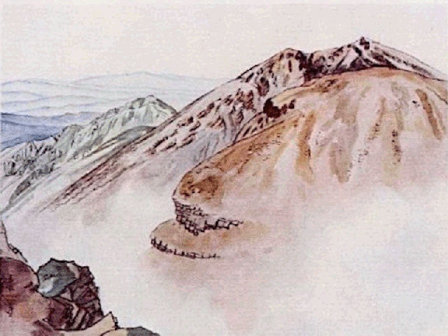
岩膚
［＃改丁］
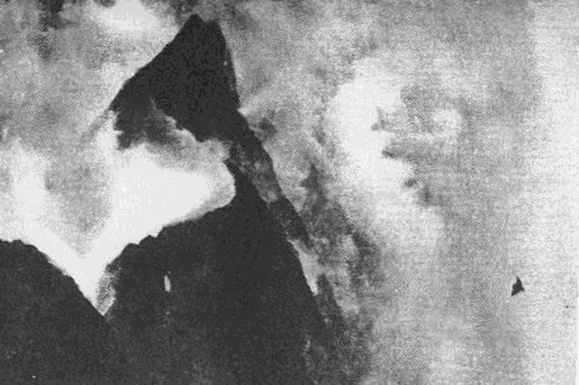
雷鳥
［＃改丁］
［＃ページの左右中央］
［＃改丁］
今度協和書院から吉江、武井兩氏の山岳美觀が出る事になつたと云ふ。吉江氏とはまだ不幸辱知の榮を得ないが武井眞澂畫伯は年來尊敬する高士であるから院主の需に應じて、潛越を顧みず敢て一言を序する次第である。
自分は畫の事は判らない、又美術と云ふものにも誠に昏いのであるから、繪とか鑄金とか云ふ方面から武井氏を知つて居るのではない。只知つて居るのは其精神であり其人格である。飽くまでも脱俗である中に常に進歩を求めて止まない。名利に對しては恬淡其物であるのにかゝはらず、情誼に厚く、約を守つて果さゞるはない。年耳順を過ぎて山河を跋渉するに壯者に讓らない。即骨髓共に仙なるものである。自分は山に生れ山に育ち、今は職として雲を眺めて朝夕を過して居る。而して殆んど多くの他の畫家の山や雲に對して常にひそかに異議をもつにかゝわらず、眞澂畫く所に對して未だ嘗て些の矛眉をも［＃「矛眉をも」はママ］不調和をも感じない。却つて未知の現象を示され或は又名にのみ聞く外國の現象をまざ／＼其の畫中に發見して我國にも亦斯れありしかと感ぜしめられる。のみならず、眞澂の畫に對する時、自分が幼時山に對して持つた畏敬を感ぜしめられる。誠に山は崇高である。山靈は常には微笑するが時には萬雷となつて吾人を叱
 する。故に山に對して畏怖を感ぜざるものは眞に山を知るものではない。而して眞澂の山は本來此愴さをも畫くものであつた。山靈も眞澂も共に默して語らないが、其眼は共に炬の如く、常に眞理の幽玄を啓示する。山靈を畫きて神を得るもの古往今來蓋し眞澂を措きて他に有りとも覺へない。本書に收むる所實は未だ其如何なるかを知らないが、恐らく其眞骨頭を示すものであらう。本書が一日も早く完成して、早く其神韻に觸れたいと思ふ。
する。故に山に對して畏怖を感ぜざるものは眞に山を知るものではない。而して眞澂の山は本來此愴さをも畫くものであつた。山靈も眞澂も共に默して語らないが、其眼は共に炬の如く、常に眞理の幽玄を啓示する。山靈を畫きて神を得るもの古往今來蓋し眞澂を措きて他に有りとも覺へない。本書に收むる所實は未だ其如何なるかを知らないが、恐らく其眞骨頭を示すものであらう。本書が一日も早く完成して、早く其神韻に觸れたいと思ふ。昭和十年六月六日 中央氣象臺に於て
藤原咲平
［＃改ページ］四時を通じて山岳は人を呼んでゐる。その形態の多樣と色彩の變化と、麓より絶頂にいたる多種の場面と、空際に連亘する一帶無限の壯美と、雲霧の去來する變幻の趣きと、そしてそれ等を示しながら默々として不動の姿を呈しつゝ、その全體としての一種の色彩形體の交響樂を空へ向つて放散してゐるのである。
私などはむしろ山岳美を語る資格はない。たゞ遠望して、山頂へ思ひを走らせてゐるばかりである。少年時よりのこの習慣が武藏野の果てに時としてくつきりと認めらるゝ國境連山を眺めやつて、いまでも胸の跳る思ひをしてゐるに過ぎない。併し山岳美と文藝との關係を究めるためには、私の餘暇をさゝげつくしても餘りある事である。
武井眞澄畫伯にいたつては、私などとは異つて、山氣を呼吸し、體驗を重ね、山岳そのものの生氣がむしろ畫伯を通じて藝術的表現を求めてゐるのである。武井氏の山岳畫こそは、現代日本の持つ最も清新な、最も奧ゆかしい藝術の頂點を示すものの一つである。セガンティニーの繪畫に山岳美の不思議な光景が、人を魅惑するやうに浮ばせてあるのは何人でもが認むるところであるが、これは歐羅巴アルプスの必然の表現であつて、一種の地方色である。我が武井畫伯の山岳藝術は、日本アルプスの持つ雲霧の變幻や、森林の不思議や、頂上の展望や、すべてが武井氏の情緒と溶け合ひ、呼吸に通ひ、山と人との渾一合體したる、そして日本人が古來から抱いてゐる天然への憧れが、柔かな言ひ難いなつかしい筆趣となつて浮び上つてゐるのである。全くユニイクな山岳藝術である。あらゆる山岳愛好者は必ずや武井氏の繪畫の中に、自己の嘗ての經驗を思ひ出し、自己の味つた山岳美觀を再現せしめて見らるゝに異ひない。
今からすれば凡そ三十年も前、武井氏等と共に山登りの旅に出掛けた思ひ出は、その頃書いた拙い文章に、拙いまゝに傳へてあるのを今更に再録して見るのは、私にとつては心苦しい思ひでゞはあるが、それ等の旅行も武井氏が山岳に親しむ機縁の一つとなつたかと思へば、懷つかしい囘想とならずにはゐられぬ。
この書の出版準備がすゝめられてゐる間にも、武井氏は既に日本アルプス山中へ赴いて、心からなる感興を味ひつゝ繪筆をすゝめて居らるゝとの事である。山頂や谿谷へ降り注ぐ梅雨の響を耳にしながら、雲霧の變貌去來の果てしないのを眺めやりながら、畫伯は一切を忘れて、山氣の身に迫るのを繪絹の上へ展開せしめて居られることであらう。このユニイクな山岳畫家の上に無限の祝福あれ。遙かに日本アルプス山中の雨季の光景を想望しつゝ、繁多な間にこの序文を書いてゐるのである。
六月八日
吉江喬松
［＃改丁］［＃ページの左右中央］
［＃改丁］
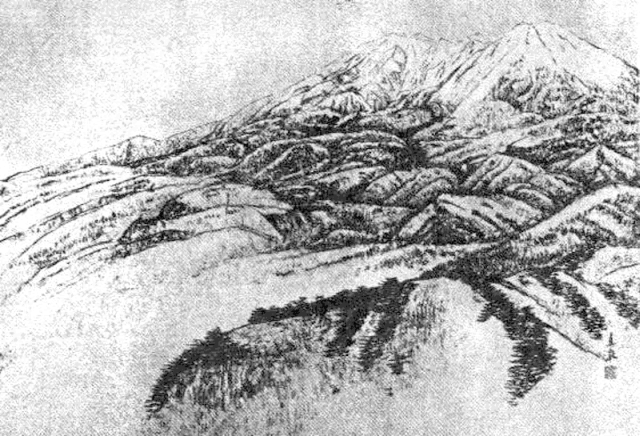
木曽御嶽
［＃改丁］
山嶽畫家の武井眞澄君、歌人太田水穗君、教育家の岡村千馬太君、この三人と共に、木曾の御岳へ登つて、更にその裏山の急峻な熊笹の中を飛騨路へ降りて再び高山の町から平湯温泉へ、そして山林地帶を白骨へ引きかへして來た一週間の山中旅行は、今からは既に三十年もの舊いことになつた。同行の何人もが、今日の登山者達のやるやうな服裝や準備をするのでもなく、そんな事は夢にも知らないで、たゞ絲經 を身に着け、草鞋を穿いて、アルペン・ストックの代りに蝙蝠傘をついてゐるといふ不思議な行裝であつた。かうした姿はおそらく今日の日本の何處へ行つたからとて見られはしまい。特に武井畫伯の如きは、その上へ大きな寫眞機と繪具箱とを兩肩から交叉して掛けて居られたと思ふ。そして少くも御岳の頂上までは下駄穿きで登られたやうに記憶する。さすがに山岳畫家の意氣の壯な事が想像される。
その頃、汽車もまだ木曾の谿谷には通じてゐなかつた。そして白衣に金剛杖、管笠に同行幾人としるしたのを頂き、鈴を鳴らして斷續して行く御岳道者の姿が桔梗が原の夏草のなかに出沒して見られ、木曾路の青葉の陰に隱見してゐる光景の頃であつた。
木曾の御岳といへば、今日の日本アルプスのピーク・ハンター達からは、無視されてゐる山だとは聽かされてゐる。さうでもあらうが、三十年前にはその裏山へ降るといふことですらが、一種の冐險の如くに、人々からは止められたものであつた。それだけ未知の境界へでも踏み込んで行くやうな好奇心が湧かずに居られなかつた。槍や穗高へ登るなぞといふ事は、その當時未だ我々には思ひも寄らぬ事であつた。
少くも武井畫伯の山岳愛好の情熱はこの御岳への登山旅行によつて一層深められたことは事實であらう。それが武井君の今日の高卓な獨自な境界を打立てる機縁の一つとなつたとすれば、我々の旅行は思ひも寄らぬ尊い收獲をもたらしたものである。私は畫伯とその行を共にした事を限りなく悦び、嘗て三十年前に書いたこの山中旅行記を、我々にとつての大切な追憶として、拙きまゝに再録することにするのである。 昭和十年四月
その頃、汽車もまだ木曾の谿谷には通じてゐなかつた。そして白衣に金剛杖、管笠に同行幾人としるしたのを頂き、鈴を鳴らして斷續して行く御岳道者の姿が桔梗が原の夏草のなかに出沒して見られ、木曾路の青葉の陰に隱見してゐる光景の頃であつた。
木曾の御岳といへば、今日の日本アルプスのピーク・ハンター達からは、無視されてゐる山だとは聽かされてゐる。さうでもあらうが、三十年前にはその裏山へ降るといふことですらが、一種の冐險の如くに、人々からは止められたものであつた。それだけ未知の境界へでも踏み込んで行くやうな好奇心が湧かずに居られなかつた。槍や穗高へ登るなぞといふ事は、その當時未だ我々には思ひも寄らぬ事であつた。
少くも武井畫伯の山岳愛好の情熱はこの御岳への登山旅行によつて一層深められたことは事實であらう。それが武井君の今日の高卓な獨自な境界を打立てる機縁の一つとなつたとすれば、我々の旅行は思ひも寄らぬ尊い收獲をもたらしたものである。私は畫伯とその行を共にした事を限りなく悦び、嘗て三十年前に書いたこの山中旅行記を、我々にとつての大切な追憶として、拙きまゝに再録することにするのである。 昭和十年四月
八月の初旬、信濃の高原は雲の變幻の最も烈しい時である。桔梗が原を圍む山々の影も時あつて暗く、時あつて明るく、其緑の色も次第に黒みを帶びて來た。入日の雲が眞紅に紫に或は黄色に燃えて燦爛の美を盡すのも今だ。此原の奇觀の一つに算へられてゐる大旋風の起るのも此頃である。
曇り日の空に雲は重く、見渡すかぎり緑の色は常よりも濃く、風は稍々濕つてゐるが路草に置く露が重いので、まづ降る恐れはなからう。鹽尻の停車場から原の南隅の一角を掠めて木曾路へ這入つて行かうとするのである。道は舊中仙道の大路で極めて平坦である。左手には山が迫り、山の麓には小村が點在してゐる。右手は遠く松林、草原が斷續して、天氣の好い日ならば其果てに松本の市街が小さく見え、安曇野を隔てゝ遠く、有明山、屏風嶽、槍ヶ嶽、常念ヶ嶽、蝶ヶ岳、鍋冠山などが攅簇して、山の深さの幾許あるか知れない樣を見せてゐるのだが、此等の山影も今日は半ば以上雲に包まれて見えない。只空の一角、私達の行く手に當つて青空が僅に微めいてゐるだけである。
此頃の中仙道の路上は到る處白衣の道者の鈴聲を聞かない事はない。金剛杖を突き、呪文を唱へながら行く御嶽道者等で、其鈴聲に伴はれて行けば知らず／＼に木曾路に這入つて了ふのである。
桔梗が原の盡頭第一の驛路は洗馬である。犀川の源流の一つである奈良井川は驛の後方に近く流れ、山が梢々迫つて山驛の趣が先づ目に這入る。驛は坂路で頗る荒廢の姿を示してゐる。洗馬を通り拔けると、牧野、本山、日出鹽等の諸驛の荒廢の姿はいづれも同じであるが、戸々養蠶は忙しく途上斷えず幾組かの桑摘歸りの男女に逢ふ。此養蠶は此等山驛の唯一の生命である。
離落たる山驛の間を走つて中仙道は次第に山深く這入つて行く。雲が晴れて日が次第に照らし出す。山風はいかにも涼しいが、前途の遠いのを思ふと頗る心もとない。
櫻澤、若神子、※［＃「勢」の「力」に代えて「貝」、U+4787、7-6］川、平澤の諸驛、名前だけは克く耳にしてゐた。櫻澤以西は既に西筑摩郡で、いはゞ前木曾とも云ふべき處である。此等の村々から松本の町へ出て來る學生がある。家から栗の實を送つて來たと云つては友人を集めて其御馳走をするのであつた。其後では必ず「木曾のなあ――」と云ふ例の歌を唄つて聞かせた。今では女の學生も出てゐる。同行者の一人の太田君は自分の教へ子だと言つて其子の家へ立寄つた。家の中は一ぱいに蠶棚が立てられてゐて、人の居る場所もない位。おとづれると、太い大黒柱の黒く光つてゐる陰から老人の頭が見えて、其子は今桑摘みに行つて居ないが兎に角是非休んで行けと云つて、連りに一行の者を引止めて茶をすゝめながら、木曾街道の驛々の頽廢して行く姿をば慨歎して、何とか振興策はあるまいかと云つてゐた。
奈良井の驛は川と鳥居嶺との間に壓せられたやうな、如何にも荒凉たる驛である。此處から嶺へ登るので、此嶺は木曾川と犀川との分水嶺になつてゐる。
嶺を越えると其中腹に籔原の宿がある。あらゝ木細工、花漬などを賣る家が軒を並べてゐる。「木曾の椽うき世の人の土産かな。」うすい木片を剥いで、一度使へば捨てゝ了ふやうな木の小皿が出來てゐる。其一枚々々に樣々な風雅な文句が摺り付てある。
此籔原の驛からは多く大工が出稼ぎに出る。年中大方の日は嶺を越えて他へ出てゐるので、主人の居ない家では戸毎大抵馬を飼ふのである。木曾馬と云つて小形な方で、峻坂の登り降りに最も適してゐる。多くて十四五頭、少くとも四五頭は飼はない家はない。其飼養は皆女の仕事で、日中は家から遠く離れた草原へ來て馬を放し、自分等は草を刈つてゐるが、夕方は放した馬を集めて歸つて來るのである。十二三頭並んで崖の上を
 つて來る。最先きの馬の背には飼主が乘り、鞍の上で草鞋などを作つてゐると、親馬の後を追ひながら子馬は立ち止つて道草を食つたり、また嘶いたりしながら走つて來る。と親馬も又立ち止つて長く嘶き互に嘶き合つて一つ／＼夕靄の中に消えて行く。
つて來る。最先きの馬の背には飼主が乘り、鞍の上で草鞋などを作つてゐると、親馬の後を追ひながら子馬は立ち止つて道草を食つたり、また嘶いたりしながら走つて來る。と親馬も又立ち止つて長く嘶き互に嘶き合つて一つ／＼夕靄の中に消えて行く。籔原の宿を出拔けると道は既に木曾川の岸を傳つて走つてゐる。明日は御嶽へ登るべき身の足の疲勞を氣遣つて籔原から馬車に乘る。馬車は川岸を
り巡つて走るので、川を隔てゝ緑葉の重々と繁り合つてゐるのを仰ぎ見る心地好さ。「面白いぞや木曾路の旅は、笠に木の葉が散りかゝる。」
之が秋の旅であるならば、夕風に散る木葉の雨の中を、菅笠で辿つて行く寂しい味を占め得るのであるが、今は青葉が重り合つて、谿々峰々盡く青葉の吐息に薫つて居る。
馬車屋は元氣の好い若者で、自分が何匹も馬を持つてゐる事をば、連りに自慢して話して聞かせた。
「何に一呼吸でさあ、五里ばかりの道、此間四時間でやつた事がありまさあ。」
と馬の強いのを誇つてゐた。――午後の日の光は緑葉に輝き、松蝉の聲が喧しく聞えてゐる。暫くすると白い雲が行くての峰に湧き上つた。日影が隱れて、青葉がざわつき出す、川を隔てゝ前の谿が急に暗くなる、と雷鳴が聞え出して、川の瀬音が之に響くかと思ふと、大粒の雨が灰のやうな砂塵の上を叩いて落ち出した。馬は
 き出す、馭者は絆を引きしめる。谿が鳴り山が響いて風が一過したかと思ふと、大雨が襲つて來た。止まるべき家もないので、馬車は雨を衝いてひた走りに走る。晴天つゞきの後とて雨具の用意がない。屋根から洩れ、正面から吹き込む。日除けの幕を一面に引はして防いでも、吹き込む雨にびしよ濡れに濡れる。
き出す、馭者は絆を引きしめる。谿が鳴り山が響いて風が一過したかと思ふと、大雨が襲つて來た。止まるべき家もないので、馬車は雨を衝いてひた走りに走る。晴天つゞきの後とて雨具の用意がない。屋根から洩れ、正面から吹き込む。日除けの幕を一面に引はして防いでも、吹き込む雨にびしよ濡れに濡れる。不意に馬車が止つたと思ふと、何か連りに話し合ふ聲が聞える。――出拔けに引
した幕を開けて顏を突き出した男がある。見ると八字の髯が第一に目に付く、頭髮が伸びて、太い眉毛の下には大きな眼が凄く光つてゐる。紺絣の洗洒したのが太い筋張つた腕にからまつてゐる。ぎよろ／＼と馬車の中の一人々々に目を止めて見たが、別に何と言ふでもなく、其まゝぐつと幕を引いて下りて了つた。日除けの隙から覗いて見ると、紺絣の下に雪袴といつて此邊の農夫が着けてゐる紺木綿の袴やうなものを穿いて傘をさしてゐる。そして馭者の方へ向つて一寸手を擧げた。すると馬車は又動き出した。「何だらう。」車中の者は話し出した。
「オイ、馬車屋さん、今のは何だえ、出し拔けに、え。」と幕の端を一寸引いて吹きつける雨に顏を背けながら訊くと、馭者は一寸と振り返つて、
「何に探偵でさあ。」
「探偵？、何の探偵だえ。」
「何に、つい二三日前にね、山の中で林務官を殺して逃げた奴があるでね、其奴が何でも坊樣の風をして逃げたつて事だで、其奴を探すんずらい。」
馭者は度々此樣な事に逢ふのか、別に氣にも留めてゐない樣だ。雨はまた一しきり烈しく降る。その降り灑ぐ音、峰から流れ落ちて來る水の音、雷鳴はまだ止まない。車中の者は身を縮めて晴れるのを待つ許り。話しすら存分には出來ない。宮越、原野、上田などは雨中に過ぎた。福島の町に入らうとする手前で雨は晴れた。夕日が遠い山の頂を射て藍青の峰が微に匂ふ。福島は川を挾み山を負ふた心地よい町である。林務官殺しの話は此處にも聞えてゐた。福島に一泊。
福島から御岳の頂上まで十里の間、其半ばは王瀧川の溪流に沿うて溯るのである。此山中の路は登り下りの坂で、松木林、雜木林、或は碧湍の岸を傳ひ、或は深淵を瞰下して行く。五人十人或は二十人三十人、白衣道者の往來するのに逢はないことはない。桑原から澤渡へ越す所で一囘王瀧川を渡る。橋は一方少し坂になつてゐる處から椽、欅、
 などの巨樹の繁茂してゐる急峻な山の中腹に向つて架けられてあるのだ。橋の下は水流は靜かであるが、如何にも深さうだ。此橋を渡ると深林の中の徑となる。小暗く立ち繁つた巨樹の根が道を横切つてゐて躓きがちである。林を出拔けると草原、崩越を越えて山に沿ひ暫く王瀧川を遠く脚下に見て行く。山又山が重つて、其間を川は眠つたやうにうねつてゐる。何だか遠い世の姿でも見るやうな氣がする。山を下りて又一囘王瀧川を渡つて王瀧の村となる。御岳の第一合目である。
などの巨樹の繁茂してゐる急峻な山の中腹に向つて架けられてあるのだ。橋の下は水流は靜かであるが、如何にも深さうだ。此橋を渡ると深林の中の徑となる。小暗く立ち繁つた巨樹の根が道を横切つてゐて躓きがちである。林を出拔けると草原、崩越を越えて山に沿ひ暫く王瀧川を遠く脚下に見て行く。山又山が重つて、其間を川は眠つたやうにうねつてゐる。何だか遠い世の姿でも見るやうな氣がする。山を下りて又一囘王瀧川を渡つて王瀧の村となる。御岳の第一合目である。王瀧から田の原（六合目）まで登る間は、一合目毎に小屋が出來てゐて宿泊も出來る。松林が盡き、雜木林が次第に無くなつて、
類の舊い苔蒸した林となる。雨雲が覆ひ被さつて來て、三合目あたりから遂に雨となつた。林の中は只狹霧と雨とのみ、雨中を鳥の聲がする、日は暮れて來る、一行四人はびしよ濡れに濡れて遲く田の原の宿へ着いた。田の原の宿を出たのは朝の四時、強力が燈して行く松明の火で、偃松の中を登つて行く。霧が濛々として襲つて來る。風が出て來た、なか／＼に烈しい。加へて塞さも嚴しい、夜がほの／″＼と明るく松火はいつか消えて了つた。天が明るくなると遠く見渡される。紫色の空、其鮮かさは甞て見た事がない。桔梗色に光を帶びて輝く美しさ、其下に群巒の頂が浮んで見える、――併し此美觀も瞬時に消えて、雲一帶、忽ちに覆うて了ふ。風はなか／＼に烈しい。偃松の上を雷鳥が風に吹かれて飛んで行く。
頂上の小屋に達したのは五時、小屋の爐に當つて身を温め、劍が峰へ登つて見た。御岳の最高峰、岩角にすがつて下の方地獄谷から吹き上げて來る烈風に面して立つと、殆んど呼吸する事も出來ない。風と共に雲が奔騰して來て、忽ちに岩角を包み小屋を包み、今まで見えてゐた一の池、二の池、三の池の姿も一切隱れて了ふ。此雲の徂徠、雲の卷舒、到底下界では見られない現象である。が、刹那に雲が開けると、乘鞍、槍ヶ岳一帶、此山からつゞく峻嶺高峰、日本アルプスの連嶺の頂きが、今目さめたといふやうな樣に劃然と浮んで見える。この峰づたいに乘鞍の頂へも出る事が出來ると聞いた、風に吹かれ雲に包まれて此絶頂無人の境を渉るのである。私は是非行つて見たいと思つた。
併し私等の今取らうといふのは、此峻嶺拔渉ではない、烈しい白雲の中を衝いて所謂裏山を飛騨の國へ下りやうといふのである。
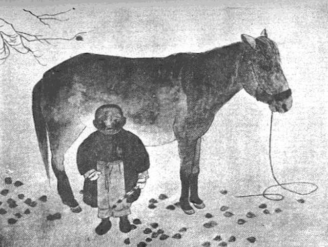
木曾馬
［＃改丁］
飛騨路といふのは峰の小屋から路を右手にとり、二の池の岸を繞つて磊々たる小石の中を下つに［＃「下つに」はママ］行くので、途と云ふべき途はない。少し霧が深く、小雨でも降らうものなら何れが路とも分らなくなるのである。峰の小屋の熊のやうな主は「危えぜ、克く氣を付けて行かつせ、何でも右へ右へと、小石の積んだのを目當てに行きせえすりあ大丈夫だ。」といつたが、福島から付いて來た案内の強力も、二の池から山を少し下つて裏山になりかゝる所で分れて木曾の方へ戻つて了つた。
御岳の裏山！ 年々飛騨路から多少の登山者はあるとは聞いたが、其他には通ひ手のない途だ。劍が峰を左手に仰いで池の岸から賽の河原といふ所を通る。一面の石原、大小何千個とも無き燒石の原である。それでも幾年かの間、登山者の草鞋の當る所だけがすれて、少し隔つて見ると微かに白く一筋の道のやうにはなつてゐるが、近く其上へ行つて見ると何處ともはつきりとは判らない、只所々に小石を積んで道しるべにしてあるのが、せめてもの目當である。
賽の河原は中々長い、雲の影が明るく暗く其上を照らして過ぐる。如何にも心もとない前途である。河原を上りつめると、一面急峻な偃松帶の中へはいる。徑は一縷、危い崖の上を繞つて深い谿を瞰下しながら行くのである。ちょっとの注意も緩められない徑だ、谿の中には一木も一草も無い。只赤ちやけた燒石が磊々としてゐるばかり、水音も聞えない。溪の周圍には太古以來人間の足跡を印した事のない山が續々として群立してゐる。只荒れてゐる山だ。夫でも次第に雲が晴れ渡つて青空が晴朗に輝き暖氣を増して來た。
一里程も下つたかと思ふ頃、偃松の幾谿を越えて遠くの方に薄い煙が見える。
「最う飛騨の國だらうか。」と思ふと何となく不思議な國へ來たやうな氣がする。確かに飛騨の國に異ひない。
偃松帶を出拔けたかと思ふと、徑は一層急になつて熊笹の中に入る。身長よりも高い熊笹をがさ／＼と分けて下るが、足とまりは一段々々と段を刻んである。其中には雨水が溜つてゐて踏むたびに飛び散る。兩手で笹を掻き分けるので、三尺離れると最う先行者の姿は其の中に沒して見えなくなる。立ち留つてゐるとがさ／＼と音ばかりしてゐる。はつと明るくなつたと思つて顏を上げて見ると、熊笹が低くなつて日影が滿面に照らしてゐる。そして熊笹の所々に頭を顯はして黄色い石楠花が咲いてゐる。
熊笹の中を馳け下ると、栂樅などの林に這入る。いかに巨きな樹でも一抱へぐらゐに過ぎないが、幹と云ふ幹には苔が蒸して、枝には兎糸が垂れ下つてゐる。中には白く骨の如くになつて立ち枯れしたものもある。或は枯れて倒れて草の中に縱横に横はつてゐるものもある。其倒れた樹の上を飛び越え踏み越えて下るのだが、その急峻といつたら全く垂直線の板上を滑り落ちるやうだ。落下しないために絶えず足を動かしてゐずには居られない。止め度なく飛び降りつゞけるのである。一寸と油斷すれば先行者の姿は草か倒木の下に隱れて見失うのである。立ち止つて「オーイ」と呼ぶと、遙か下の方で「オーイ」と答へるが、只聲だけで、其聲も妙に物凄く響く。樹林の中の空氣も人の聲を傳へた事は稀にしかないのだ。聞く者の耳も妙に變つてゐる。此の「オーイ」「オーイ」の應答が杜絶えると、自分の心臟の皷動が高く響くだけが氣になる寂莫である。
遠く下の方で谿流の響が耳にはいるが、降れども／＼中々達しない。おりてもおりても殆んど同じ垂直の徑である。膝頭が痛くなり、眼も眩むやうに覺える。斯樣な徑を果して登る人があるだらうか、下り盡したら何處へ達するのだらう。水の音は何時までも同じ度合に聞えてゐる。
二三里も下つたかと思ふと、不圖溪流の音が近くに聞えて、路が右に一
轉する。深い草が開けて丸木を渡した谿川へ出た。最う人里も遠くなからうと思つて、倒木へ腰掛けて休んでゐると、遲れた同行の一人が漸く追ひ付いた、先きへ行つた二人の影は見えない。「ねえ君、先きの連中は道を間違へたのぢやなからうか。」
「なーに大丈夫だ、間違ひようもないから。」
「そうだね。」見合せた二人の顏は妙に蒼白かつた。言葉も不思議に澄んでひゞくし、話し合ふ氣にもなれない。何だか、溪流のざわ／＼いふのが次第に高くなるやうで、如何しても長く停止してゐられない所だ、又
りくねつて林中の徑を走り出した。今度は前に比べると一層高く水聲が聞えて來る。もう濁川の湯へ近くなつたのではあるまいか。水聲は聞えても中々林は盡きない。路の急な事も依然として急だ。一時間位も走つたかと思ふと、川の縁に沿うて藁屋根が一つ目に這入つた。あゝ川は益田川の上流だ、家は濁川の湯だ、愈々飛騨の國へ來たのである。
急いで川の岸を傳つて行くと、危い橋を渡つて家の前へ出た。前も後も急峻な樹木の山、此山に狹まれ溪流に向つた一軒家、木材だけは巖丈なものを用ひて、屋根も厚く葺いてある。
「やあ、遲かつたね。」と出し拔けに聲がする。
驚いて見ると、左手の小屋の中からひよつくら頭を出した者がある。見ると先行者の一人である。
「早く來たまへ、好い心持だ。」近寄つて見ると、可成廣い湯槽にいつぱい、上から竹樋で引いた湯が、ざわ／＼ざわ／＼と溢れて流れてゐる、アルリカー泉の［＃「アルリカー泉の」はママ］やうだ。
草鞋を脱ぎ、衣服をぬぎ捨てゝ急いで湯へ飛び込む。柔な
湯から出て、浴槽から直ぐ荒蓙を敷いた二階へ昇る。戸も無く、荒板の儘だ。四人は蓙の上へ裸形のまゝ休んでゐると、上り口の方から、髮を無雜作に束ねた女の顏が出て、
「何か食べさつしやるかね。」と云ふ、其齒は黒く鐵漿で染めてゐる。
「何か喰べるものがあるかね、川魚でも。」
「川魚なんかありましね、御飯と御汁とならありますし。」
「ぢや、それでも好い、急いで持つて來ておくれ。」持つて來たのは御飯といつても砂だらけ、御汁と云つても媒臭いやうで、おまけに鹽湯でも飮むやうだ。山菜とかいつて野生の菜を汁の味にしたものである。其飯はざら／＼してゐて、如何に空腹でも二杯とは食べられない。旅宿のある所まで何里あるかといふと、
「そうだね、まあ西洞まで行かつしやりや、宿屋はありましず、四里だね。」
「四里ぢや、一呼吸だ、路はどうだね。」「矢張今降りて御座らつしたやうな……。」
「急かね。」「だが、いくらか違ひましず。」
四里の峻坂、木の根を踏み越えて下るのか。一呼吸だと意張つては見たものゝ實は内々閉口してゐた。夫に空はどうやら曇つて來た。此で雨にでも合はうものなら愍然なものだ。二階から下りやうと段々の處へ行くと、戸を立て切つて上に小さな木札をかけて「林務官御室」としてある。斯樣な家でも特別室があるのかと不思議な思がした。
入口の處へは今、里から食料を運ぶ男が着いたと見えて四五人集つてわい／＼いつてゐた。ぎよろつと片眼の飛び出した大男が腰をかゞめて、かますに這入つてゐる青物など何かと調べてゐた。先刻の主婦もゐる、六十程の老婆もゐる。若者が二三人ゐる。見ると、入口の柱に寄りかゝつて帶をだらりと垂らした十八九の女が一人、娘とも思はれないのが、蒼黒い土のやうな顏色をしてゐる。疲れたやうな眼を擧げたが、又すぐ視線を地へ落して了ふ。
「何だらう、え君。」一人が小聲に囁く。「さあ、不思議だね。」「林務官室！。」誰かゞ小聲で言つた。「あゝ、そうかも知れないね。」――此家を辭して復た橋を渡つて昇降常なき路を辿つて行く。樹は次第に大きくなり、同じ栂、樅の類でも上の方に比べると勢好く生長してゐる。谿は飽くまで深い、峰も飽くまで高く、如何に見上げても果しが無い。枯れて倒れて朽ちた樹が同じく縱横に横はつてゐる。はじめの間は日の光が木立の間から洩れて青白く斑に射してゐたが、雲行が怪しくなつたと思ふと、林の中が暗くなつて山がごうと鳴り出した。ざわ／＼ざわ／＼と草が搖いで、木と云ふ木は枝が打合ふ。如何にも氣味が惡い、と思つてゐると、そのざわめきの中からぬつと何者かが姿を現はした。見ると二つの大きな人影だ、そして自分等の方へ向つてずん／＼やつて來る。近寄つて見ると、黒い林務官の制服を付けた四十位の男だ。細い徑をすれ違はうとするので、
「ちよつと伺ひます、西洞までは未だ何里ありましやうか。」と丁寧に訊くと、一寸と立留つたがそのまゝ棒立ちになつて、一行には目も呉れず、何處か遠くの方を見入つて、聞耳でも立てゝゐるといふ風で、顏の色は蒼黒く、耳が不思議に大きい。「そう、五里位はあらうかな。」と吠えるやうな、木の洞の中から出て來るやうな聲で云ふ。「五里？」驚いた。前の湯では四里と聞かされたのが、二里も來たかと思ふのに猶五里だといふ。林務官は言ひ捨てたまゝずん／＼行つて了ふ。後からは筒袖を着て、背板と云ふのを背負つた男が附いて行く、すぐ草の中へその後姿は沒して了つた。――山や谷は此時一層音高く鳴り出した。「妙だね。」と何人か言ひ出した。
「何だか變だね。」
「ほんとの人間か知ら。」同じやうな感じは皆の胸を走つた。皆は振返つて今行つた人達の後を見ずには得られなかつた。
遂に雨となつた。
深山の雨、幾千年となく斧の入つた事のない深林の雨だ。始めは繋り合ふ木の葉に遮ぎられてゐるが、次第／＼に烈しく落ちて、枝がぬれ、幹がぬれ、草がぬれ、自分等の纒つてゐる
御嶽は信濃に向つては大きな山であるが、飛騨に面しては殆ど垂直のやうに思はれる。其深い峰の中腹を傳つて下りて行くのである。何處まで行けば人里に出られるのかといふやうな氣がする。時計を見ると最う四時だ。「ねえ君。これは四里や五里の道ぢやないぜ。」「何里だか知らないが疲れて了つた。」雨中を六里は確かに下つた。身に着けてゐる物は一切濡れてしまつた、マツチさへ火が付かない、煙草を吸ふ術もない。もう外部に對する勇氣はなくなつた。不平を口にする事すら出來ない、殆んど何處へ行くと云ふ考へもなく、又別に深い苦痛も感じない。無意識のまゝで、すた／＼すた／＼足を運んで行くばかりである。「人」だと云ふ感念すら失つてゐる。
路が漸く急に下つて、林が盡きて草山に出た。局面の變化は多少の希望を繋がせるものである。遠くに瀬音が聞えだした、益田川の本流であらう。その瀬音を耳にすると一行は俄に元氣付けられた。雨も此時小降りになつて、鼠色の雲が峰から峰へ動いて行く。が、次第に夕暗が迫つて來るのが感じられる。
不圖路下の方で馬の嘶く聲がする。透して見ると草山の麓に黒いものが動いてゐる。
「オーイ」と聲を掛けると、「オーイ」と下の方で應呼する。
「西洞までは最う近いかアー。」と訊くと「二里位はあるぞオー。」と言つて草刈る手をやめて上を仰いでゐる。まだ二里の路！自分等は殆んど其處に立ちすくまずには居られなかつた。氣が付くと其處でも此處でもザクザクと草刈る音がする。見ると路の直ぐ上の所にも馬を引いて來てゐる者が二組も三組もゐる。
「何處か此邊で泊めて呉れる所はないかね。」と聞くと、「西洞まで行かつしやれ、それまでは無えねだ。」といつて、不思議さうに私等の方を見送つてゐる。仕方がない西洞まで歩るくことにする。
路の兩側には四五尺にも餘る草が伸びてゐる。霧は次第に濃く群がつて其草原の上を爬つてゐる。其處此處に大小の小屋が眼に這入る、今の草刈共の泊る小屋に違ひない。
草原を過ぎて松林となつた。路は平かに廣くなつて遂に益田川の岸に出た。なか／＼の急流だ、其岸を傳つて走る。四邊が次第に暗くなつて來るにつれて、只走るより外に法はない、再び機械的に走り出した。殆んど夢中に歩いた。何里位か判明らないが、山が低くなつて地が稍々開けて來たと思ふと其山の下に火影が一つ見えた。懷しき火影、此時位人家を懷しく感じた事はない。疲れた足をひいて走つた。途中で松火を點して來る女にあつて漸く西洞へ來た事が判明つた。其松火を賣つて貰つて教へられた宿屋へと着いた。大きな家の中央に爐が切つてあつて、六尺もある大きな木が三四本燃やしてある。宿の老爺は「ようこそ」と自分等を迎へて呉れた。胡瓜の汁の味でも濁川の湯のものなどには比べものにはならない。空腹を癒して臥床へはいると、疲勞がすぎたのか眠られない。遠くない處で馬の鼻を鳴らす音も聞える。――不圖林務官の事が胸に浮んで來た、雨に逢つて如何したらう、今夜濁川へ行つたらうか。彼のやうな林務官が殺されるだらうか、――なぞと思つてゐる中にいつしか寢つて了つた。
雨と霧とに卷かれて六里の間、人つ子一人登つて來ない御獄の［＃「御獄の」はママ］裏山を飛騨の國に降りて、其の晩は西洞といふ山の中の村へ泊つた。疲かれ切つてゐたので、前後不覺に寢込んでしまつた。不圖氣がつくと、何處かで人の聲がする、馬のひゝんと嘶くのが耳に這入る。それが何だか、暗い遠くの方から聞えて來るやうで、切角眞暗い穴の中から這ひ出して來て、一生懸命で、其穴の縁に取りついて物音を聞いてゐるが、ともすれば其縋つてゐる力を失つて、またもとの穴の中へ落ち込んでしまひさうな氣がする。
話し聲、馬の嘶きが一層はつきりして來た。室の中もうす明く見えだして、昨日の山路、今日の行くてのことが朧氣ながら頭に浮んで來る。同行者も皆眼を覺まして居るやうだ。
戸を開けて見た。
爽かな山國の朝の景色！雲も霧も夜の間にすつかり晴れてしまつて、松林の山がころび出たやうに眼の前に迫つて、其裾を白い泡を立てゝ流が走つて行く。
青やかな草の香が鼻を襲ふ。見ると、直ぐ前の庭に刈つて來たばかりの青草が山のやうに積んで地におろしてある。馬小舍に投げ込んで、馬に踏ませてから畑の敷肥に使ふのだらう、馬は今までの重荷を急に卸されて身輕になつて、身體じうに波を打たせながら、何人も引かないのに、のそり／＼先きに立つて歩いて行くと後から脊負子を脊に、雪袴に草鞋穿きの若い男女がついて、家の角を
つて見えなくなつた。庭へ下り、太い掛樋で山から引いて來てある水で顏を洗ひ、全身を拭ふと、冷かな山氣が肌に迫る。仰ぎ見ると、紺青の濃い空の色が、四方に立ち込んでゐる山々の頂きに垂れかゝつて、朝日は流れの向ふ側の、松山の一面を赤く照らしてゐる。
今日は久振りで市街のある所へ出られる。三四日山の中ばかり歩いて居たので、人家のある所が懷しい。今日は益田川の岸を下つて高山の町へ這入るのだ。
日の光は次第に廣く、峰から森、狹い谿、深い溪流の上までも射し込んで、目に入るものは皆透き通る位に鮮かだ。山の下の細徑は谿の上を繞り繞つて行く。
西洞から三里ばかり下りると、淺井といふ村へ出た、信濃から來る縣道野麥街道は道幅が廣く、電柱が遠く立ち並んでゐる。久振りで知人に逢つたやうな氣がした。
見座といふ村を通つて、郡上根といふ小さな峠を越す。眼界が稍々開けて稻田のつゞいてゐるのが目に這入る、此稻田のつゞく果てに高山の町が立つてゐるのだらう。ゴチヤ／＼と不規則に立ち塞がつてゐる山が次第に四方へ片づいて、人の住むべき地歩を少し許り讓つてゐるやうな氣がする。
峠を越して四里高山の町の白壁が遠くに見え出して來た。寺の鐘樓が高く家々の上に聳えてゐる。町の響も聞えて來るやうな氣がする。――私は少年の時分、私の家の隱居家に來て居た婆さんのことを思ひ出だした。信濃へはよく飛騨女が流れて這入つて來た、飛騨女は皆色が白く、顏立ちが調つてゐる。私の郷里に近い町には廓があつて、其廓へは飛騨女が多く來て居た。其婆さんも其廓へ來てゐたのが、年老つてから私の家の隱居家へ雇はれて居たのであつた。暇さへあれば高山の町の話をして聞かせた。照蓮寺の御堂、高山八幡の宮とか、私の胸へは婆さんから聞かせられた幼時の記憶が次第に浮んで來た――物語の國へでも這入つて行くやうな思ひがする。
町の入口何處の田舍の町へ行つて見てもそうだが、狹い道の兩側の家の屋根は低く何處か黒いやうな影が伴つてゐるやうで、荷車、馬、子供、犬などが忙しそうにしてゐるが、妙に寂しい、そして一種の懷しい旅情を覺えさせるものだ。
高山の町は思つたよりも整然と調つた這入る者の氣を引しまらせるやうな、生氣の充ち／＼た町である。眞中に川が流れてゐて、其川に沿つて賑かな通りが縱横に出來てゐる。飛騨には大きな鑛山が幾つもあつて、其の鑛山の關係者が皆東京から來るので、高山の町はなか／＼裕福だと聞かされた。何處を通つて見ても充實した感じを覺えさせる。
夜になつて雨が降出した。雨の中を傘をさして町を見に行く、廿間もある間口の大きな家が兩側にならんでゐる町を通る。大通りを横切つて幾つかの横町がある。皆賑かに人が通つてゐる。川の岸まで出て見ると、水が一ぱい溢れて流れてゐる。橋の際に柳が立ち並んで、夜の雨で茫つとしてゐる。岸の家々の軒燈籠が水にちら／＼寫つてゐる。橋の上を若い男の元氣の好い聲が通つて行く、橋の向ふには柳のこんもりと茂つた中から、ちら／＼燈火が見える。其柳の一廓は此の町の廓だ。
總べてが賑かだ、「小京都」といふ名前にそむかないと思つた。
書店へ寄ると、土地の繪はがきが出てゐる。其中に乘鞍岳の全景があつた。私はそれを買つて歸つた。
群巒重々として幾多起伏してゐる上を壓して、雪色の斑な乘鞍の連峯が長く亙つてゐる。初秋の空らしい、細い雲が其頂の上を斜めに幾條も走つてゐる。如何にも悠然とした山の姿だ。飽かず眺め入らずには居られない。
信濃高原の西方を繞る山脈の奧深く、幾重かさなつてゐる峰々の間から、四時雪の姿を見せてゐる山はこれだ。入日が沒した後にうす紫の色に包まれ、遠い微かな思ひをさせながら夜雲の底に沈んで行く山もこれだ。中央信濃の少年が幼時から西方を指して、第一に其名を教へられる山は此山だ。
今見る圖は其乘鞍の後姿だ、母親の懷に抱かれて、
坊やのお乳母は何處行つた。
あの山越えて里へ行つた…………
と夕暮毎に唄ふのを聞かせられた、其山の後方へあの山越えて里へ行つた…………
つて來たのだ、不思議な國へ來たやうな氣がする。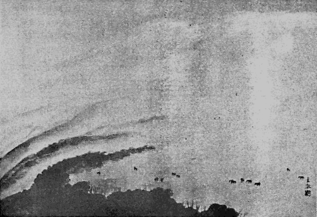
放牧
［＃改丁］
其夜は山中の旅行に餓ゑてゐた美味、川魚のフライ、刺身、鯉こく、新鮮な野菜、美しい林檎、芳烈な酒、殆んど盡くる所を知らず四人して貪つた。
翌日はまた霧雨が降つてゐたが、豫定通り出發した。出る
 々草鞋を泥に踏み込んで、高山の町を出た。
々草鞋を泥に踏み込んで、高山の町を出た。雨は降つたり止んだり、折々日がぱつと照り出すかと思ふと、また急に雲が重く重つて來たりする。道は少しづつ爪先き上りになつて、東北の方角を指して、また山の中へ向ふのである。四方を見渡しても小さな山が一面眼前を埋めて居て、眺望がさらに開けない、せゝこましい感じをするばかりである。
一里半ばかり行くと坊方といふ山村がある。其處から蒲田の温泉と上高地の温泉へ行く道とがあるが、それへは行かず、旗鉾を通つて平湯へ行かうといふのであつた。五里行くとその旗鉾といふ村へ出た。山が漸次に深くなり、山道を荷を負ふて通ふ牛が其處此處に群をなしてゐる。道の兩側の坂地をならして小さな麻畑が幾つも出來てゐる。此處までの道は、山も高くなく、只ありふれた山地の景色に過ぎない。
旗鉾からは山は次第に深くなり、樅、栂、檜などの大木が茂つて、路は泥深く、牛の足跡に水が溜つて居て、羽蟲が一面泥の上を飛んで、人が行くとぱつと舞ひ上る。道は細くうね／＼林の下、谿の上を傳つて上る。さあつ、さあつと水の音か、樹上を渡る風の音か、一寸と判斷のつかない響がして、鳥の聲が妙に澄んで來る、道を行く者も自づと默つてしまう。
雨は止んで、雲が次第にうすくなつて來た。まだ行く先き三里の山路だ。
熊笹が次第に深く茂つて來た。少し先きまで降つてゐた雨が、笹の葉にたまつて居て、脚絆までもびしよ濡れになる。見ると、行く手の藪の中にぬるでの葉がもう赤く染まつて秋の景色をほのめかせてゐる。
一里、二里、熊笹の中を踏んで登る。樅の林が厚く茂つて、幾ら登つても果しがない。振り返つて見ると、樅の樹間を透かして、山々の繞つてゐる間に、稻の敷いてゐる平地が處々に見える。
夕日がきら／＼雲間を洩れて射だした。うす青い、妙に澄んだ光が熊笹の上をすべる。樅の林がとぎれて少し明るくなるが、向ふを見ると、まだ暗く厚く茂つてゐる。其中に光が射し込んで縞を織つてゐる。
切り倒したのか、自づと倒れたのか、古い大木が熊笹の中に横たはつてゐる。其上を踏み越え踏み越え登る。峰から谿から雲が次第に分れて、光は亂射する。物象の變化が如何にも不思議を思はせる。
不圖、行くての笹原の中で、何かうなる聲がする。ぐう、ぐう、と斷續して聞える。思はず立ち止つた。「何だらう。」「何だらう？」と同じ問が四人の間に繰り返された。
關はず進んで見ると何か笹原の中に横になつてゐる。傍の大木が倒れたものゝ上には、脊負子が立て掛けてあつて、衣服が丸めて括しつけてある。それに、大きな刄廣の鋸と、鉞が一丁、小さな瓢が一つ、括しつけてある。
「あゝ人だ！」「人が居る。」と四人は木の上へ馳け上つて見た。
老爺だ、六十許の白髮頭の老爺が笹の中に長くなつて顏を腑伏せて眠つてゐる。
「オーイ、どうした、オーイ。」と聲を擧げて呼んで見ると、「ウーム」といひながら身を起す。見ると眞紅な顏をして「アー」と大欠呻をしながら、目を擦つてゐる。而して「あゝ、好い氣持で寢てしまつたな」。と、兩手を長く伸ばしながら一行の方を見て、
「一體、お前樣達や、何處から來たゞね。」
「何處からつて、高山からさ、お前は一體如何したんだ、そんな處に寢て居て、吃驚するぢやねえか。」
「なあに、一ぱい引かけて、其元氣でやつて來たゞがね、あんまり好い氣持だもんだで、つい寢ちまつて……はア……。」
「でも、もう日が暮れるぢやないか、何處まで行くんだえ。」
「なあに、今夜は平湯までさ、明日は信州へ歸るんだ。」
「平湯までだつて、まだ大分あるだらう。」
「なあに一里そこ／＼でさあ、へえ此れから先きは一と走り下り一方でさあ。」
「ぢや一所に行かう、老爺さん。」
「えゝ、行きますべえ、あゝ、どつこいしよ、山で日を送つてりや安氣なもんだ、あさつでは久し振りで嬶の顏でも見ますべえかなあ……」
「老爺さんは今まで何處に居たんだえ。」
「何に飛騨の山の中に居たんでさあ、飛騨なんて小つぽけな國でね、これから信州へ歸るんでさあ。」
「信州の方が好いかね。」
「そりや。國柄が違ひまさあ、昔から飛騨は下々國といつて、『飛騨の高山乞食の出場所』つて、歌にもあるぢやありましねえか。」
「大變な氣焔だね、山の中で何をして居たんだい。」
「なあに、大勢で木を伐つて居たんでさあ。」
「面白いだらうね。」
「若い奴ばかり集つて居りますからね、はゝゝゝゝ。」
「寂しかないかね。」
「寂しいたつて、お前樣、仕方が無え、せつせと稼ぢや、斯うやつて時々家へ歸るんでさあ。」
「他の者は？」
「他の奴等は未だ殘つて居ります、可愛そうに、若い奴らだから女を戀しがつて、ね、それでも、俺のいふ事を聞いて默つて働いて居まさあ……。」
老爺は酒臭い息を吐きながら、脊負子を脊負つて、大聲で話し掛けながらやつて來る。
入日は峰の雲に隱れてしまつた。徑は登り盡くして平らになつた。樅の木が立枯れして、白く骸骨のやうになつて立つてゐる。最う一度振返つて見た。飛騨にはもう雲が落ちて、今日通つて來た邊などの見當は少しもつかない。此山を向ふへ下りると、またいつ此の飛騨の地などへ來れるか分らんと思ふと、懷かしいやうな氣がして暫く立つて居て見た。
下り坂の端に立つた。ぱつと一道の虹が深谷の中から天に向つて冲してゐる。深い深い何丈とも知れない谿だ、ざあ／＼と水音らしい響が聞えて來る。谿底はもう薄暗い。谷を隔てゝ黒い岩質の山が微かな夕の光を反射させてゐる。
「あゝごしてえ、まあ先へ行つしやろ、平湯はこの谷の底だで。」老夫は岩角へ腰を卸した。
私達は草鞋の紐をしめ直して、殆んど垂直とも思はれる礫だらけの谷の道を馳け下りた。一度足を動かし出したらば、止めやうがない。腹をでく／＼させながら、息もつかずに走り下りた。
籔道をくゞり拔けて溪流の岸へ下りた。只一面の短い草の原、今まで來た道は何處へやら、さつぱり判然らなくなつて了つた。が仕方がない、川を傳つて下りて行つた。何だか擂鉢の底でもめぐつてゐるやうな思ひがする。斯樣な所を通つて行つて果して温泉なぞに出られるだらうか、と疑ひたくなる。一寸と立止つて耳を澄すと、川の音と、うすくかゝつて來た霧の中をキユツ、キユツと鳴いて飛んでゐる蝠蝙とがあるばかりだ。空を仰いでも、もう虹の色はいつしか消えてしまつて、薄ぼんやりして居るばかりだ。後から來る老爺を待たうかと言ひ出したが、まあ關はず行けといふので進んで行つた。
川が折れ曲つたかと思ふと、山陰に家が黒く見え出して來た。燈火がちら／＼する。湯の香もする。人の聲もする。ほつと息をついた。足も自ら急がれた。
湯煙りが上り、靄が白くゆら／＼立ちのぼる中に百六十軒の人家が並んでゐる、賑かに歌をうたう聲が聞えてゐる。實際思ひ掛けない所を見付けたやうな氣がした。其中の大きな家を一軒見付けて泊つた。湯は炭酸泉だ。外湯で、大きな共同の浴場が出來てゐて、皆下駄を穿いて其湯に這入りに行く。
翌朝目がさめて戸外へ出て見ると、雲が晴れ上つて、西の方に當つて連峯の上、槍ヶ岳の尖頂は雲を突裂いて立つてゐる。温泉の直ぐ後方からは乘鞍岳つづきの連山が、ごた／＼聳えたつてゐて、今日越すのは、此連山の間の安房峠といふので、此れを越して白骨温泉へ出ると、都合二囘、――一度は表から裏へ、今度は裏から表へ、日本アルプスを横斷した事になるのだ。
一行は身仕度をして直ぐ裏山から登り初めたがなか／＼急峻だ。折れ曲り／＼して草深い中を行く、風は涼しいが籔が繁つてゐるので熱苦しい。少し登ると昨日越して來た平湯峠が目にはいる。
一寸と、曲り角に休んでゐると、上の方で「アハ丶丶丶丶」と笑ひ聲がするので、ぎよつとして見上げると、昨日の老爺が上の岩角で休んでゐた。
「やあ、お早うござんすね。」「お早う。」「隨分つらうござんしず。」
と言ひながら、先きへ立つて登つて行く。そして色々な話をして聞かせる。年々此山道で春先き一人や二人死人のない事は無いといふ。そうかも知れない。細い道の一方は深い谿、一方は切立つた砂山で、たえず砂が上からほろ／＼崩れ落ちて來て、徑を埋めて谿へ落ちて行くのである。
登りつめて平かな砂路へ出た。道の行くては大きな黒い山の中腹目がけて打當つて行くやうになつてゐる。雲は折々其山の頂からかけて一面に濃く中腹までも垂れ下つて過ぎて行く、一簇又一簇、その度に寒さがじつと身に泌みる。八月の中旬だといふのに、山の中で蝉の聲一つしない。林の樹も動かない。立ち止つて耳を澄すと、岩角に突裂される雲の音が聞えるやうな氣がする。雷鳥が一羽不意に林の中から飛び出した。
雲は次第に低くなつて來た。道はまた細くなつて、樅の樹の白く立枯れした林の中を行く、碎けた骨のやうに立つてゐる其尖端に雲が引つかゝり、裂けて、幾條にも細くなり、又集つて、默つて四方に手を伸ばし、壓しつけるやうにして通つて行く。
皆な默つてしまつた。咳一つしても雲へ響き、何か眠つてゐる者の眠を醒し、荒れ出されてはたまらないやうな氣がする。――森然とした中を只默つて通つて行く。
雲の中を道は自ら曲つて、立枯の林の中から深い谿の上へ出た。谷からの風に雲はぱつと吹き拂はれた。
「あゝ、やつと信州の山かな。」と言ひながら老爺は道の曲り角へまた腰を卸した。
「あすこに見えるのが燒山でさあ、そら、信州の山はやつぱり大きいね、此邊まで來ると、氣がせい／＼する、へえ、此邊を下りせえすりあ、信州でさあ。」
私達も腰を卸ろして一休みした。日光が美しく信濃の山々を照らしてゐる。青空は濃く、空氣は澄んで、すが／＼しい。何とも言へない好い心持だ。
鳥の歌が聞えだした。坂路を少し降りて來ると、溪流が東北に向つてながれてゐる。もう梓の上流だ、道はその谷の上をめぐり／＼て下る、上高地への分岐點も過ぎて大曲りに谿を一囘りすると、青い草山の向ふに白骨温泉の家屋が目に這入つて來た。
明治三十九年九月
［＃改丁］［＃ページの左右中央］
［＃改丁］
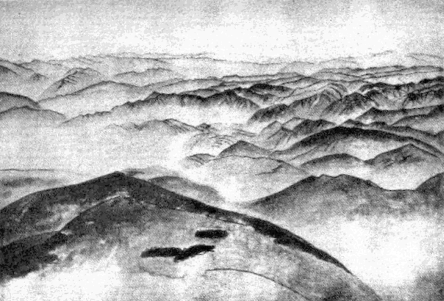
山岳重疊
［＃改丁］
アルプス連峯の輝かしい姿を一望におさめ得るのは、伊太利のトリノから汽車で、佛蘭西の國境へ向つて行く時であらう。我々が通過した五月中旬の爽快な空の下に、アルプスの連峯は、雪白の姿をほとんど全地平線上に浮ばせて、たゞトリノへ向ふ一角の空を殘すばかり、この目を奪ふやうな輝しい圓形の直徑線上を、汽車はその連峯の中心をめがけて走りに走るのであつた。
巨大な無蓋圓形劇場の眞中を走つてゐるやうな、華さと、晴々しさとを感じながら、しかもサアカスの中央へ追ひ出された馬が、その觀衆の視線に怯えて狂ふやうに、純白な巨人等の聯立し、瞰視してゐる中を走る汽車は、急いで、この默々として立つ無數の白衣の巨人等の冷たい瞰視の眼を脱がれようとするものゝ如く走りに走りつゞけてゐた。
うるんだ輝きを持つ伊太利の空も、この北部山岳地帶へ來ては、さすがに紫紺色を濃厚に加へて、それがこの輝かしい大弧線の絶端の上へ落ちる時は匂ほやかなほのめきとなつて、空そのものが地上の最高處と溶け合つて、光とも匂ひともつかぬ、一種おぼろな色となつて、蒼茫としてはてしなく廣がつてゐるのである。
嚴肅な、透明な、輝かしい、そして一切が淨化せられた、しかも無限の一方に連續してゐる氣分、これはまたユングフラウなぞの頂上に立つた時の感じなぞとは異つた、一種のやすらかさの伴つた、人界の中にゐながらにして感ぜらるる壯美の極致である。
スタンダアルは幼年時から眺めやつてゐた佛蘭西アルプスのなつかしい姿を離れて、伊太利へはいつた時、初めてアルプスの壯嚴に打たれたといつてゐるが、少くも全體としてアルプスの連嶺を、その輝しい姿に於て眺め得らるゝのは伊太利の方面からである。トルストイが青年時に、コオカサスへの初めての旅に向つた時、草原の果て、地平線上につぎ／″＼に現はれて來る山岳の姿を遠望した時、その都度嘆美の叫びを擧げずにはゐられなかつた心理過程もほゞ想像の出來ることである。
山岳征服者等の悦びは、その遠望せらるゝ山岳の美に、その山岳の空際に描き出す力あるしかも柔かい空線に籠められてゐる無限の動力が、一時的に靜止してゐる一種不思議な魅力に引きつけられるのであるが、彼等は更に、その無限の魅力を持つ空線の一端に自分の身を置いて、自分等の體をも同じくこの自然が彫みいだす大群像の一部となしたい要求に驅られるのである。
ロダンの彫像の如何なる部分を見ても、我々はやはりこの大自然の刻みいだす山岳を構成する各部分、各線の美を見出すと同じやうに、我々はまたこの大自然の原型藝術の中に、我々人類の巨匠の創造し出す、無數の變化を一層擴大したる形に於て認むるのである。そしてその自然の藝術と同じ形態に身を整へ、同じ呼吸に氣分を整調せんことを要求する。スタンダアルやトルストイの山岳を望んでの絶※［＃「口+斗」、U+544C、50-1］はつまり、その瞬間に於ける自然と人間との呼吸の一致を無意識に發露せしめたものである。
私は所謂日本アルプスと呼ばるゝ連峯の大觀をおさめ得るのは、ちようど歐羅巴アルプスを伊太利の方面から眺めると同じやうに、信濃の方面から眺むるのではなくして、むしろ裏面と思はるゝ越中の方面からして、しかも海上を能登から越中へ向ふ船の甲板上から眺むるのが最も壯觀であると信じてゐる。
海國日本の連嶺は、他日飛行機上から瞰下する折があれば知らぬこと、今日までは信濃の中央、松本市の東部なぞの山々から眺めやるのが大觀をおさめ得る最も好適な場所であらう。「たて
はす雪の高根の銀屏風、なかに墨繪の松本の里」といふ歌が何人の作であるか、かつて少年時代に松本市の古老からきかされた事を覺えてゐるが、徳川期の或る時代の人が即興實景をうたひだしたものであらう。そしてこれはおそらく今日の所謂日本アルプスなるものが、その名に於て呼ばれざる時代に、その雪の高峯として、一望に美的鑑賞眼にはいつた最初の表現であらうと思はるゝ。この實景は、そして、松本市の東部の山山から、眼下に松本市を見おろして、更にその背景をなす飛騨山脈一體を眺めやつて、詠じ出したものであらう。けれど、能登の海上からの眺望はこの連嶺を眞正面に眺めやるとか、或は多少でも俯瞰するとかいふのではなく、遠く一種の島山の如くに仰見る大景である。我日本の中央を横斷する梁骨を一望に仰視する壯觀である。日本を暫くも離れて遠國へ行つてゐるものが或時若し日本全體を一の畫圖として、夢の中に思ひ浮出させることがありとすれば、それは必ず、紺青の夜の海に、銀灰色をなして浮び上る島山の姿であらう、そしてその連山の麓に、同じく銀波の寄せて碎くる遠い音を耳にするであらう。――我々が能登の海から仰ぎ見る日本アルプスの連嶺は、まさにこの夢裡に浮ぶ日本そのものゝ如き大景である。
佛蘭西の方面から見たアルプス、即ちドオフイネの奧に、半天を劃する如く聳え立つベルドオヌの美觀は、終生忘るゝことの出來ないなつかしいものである。私はこの美觀を仰ぎながら二囘の夏休みを送つたイゼエル河岸の、グルノオプル市の爽やかな夏を今も常に思ひだす。
ベルドオヌの美しさは、全く見ざる人には想像が出來ぬであらう。アルプ・フランセエは瑞西の首都ベルヌの市廳の前から眺めやる如き、連山の頂の竝立ではない。殆ど全身を臆するところはなく人に示してゐながら、しかも孤立した高山の寂しい姿ではない。無限の深さと、無限の連續とを横には示しながら、同時に空際から地上にいたるまで、縱面の立體美を展開しておしむところがない。
朝日を受けて、國境の連嶺は恭しくも微笑する。艶治たる風眸である。スタンダアルはこの連嶺を女性らしいと考へ、伊太利に入つて初めて、男性アルプスを見たといふのであるが、實際、山嶺の嬌姿を示すのはこのベルドオヌである。純白の雪冠をいたゞいた美女の氣高さと匂はしさ、永久處女の美と魅力、ちようど、十四世紀以後の、即ちルネエサンス期の聖母像の姿體に、我々は一種のコケットリイを見出すが如きものである。
連緑の野がこの山嶺の麓につゞいてゐる。しかしそれは大方白楊の林である。その間をうねりうねつて、イゼエルの河が流れ、この河の岸には、果しなくコクリコの眞紅の花が咲きつゞいてゐる。燕の群が飛來することの多いのも、このドオフィネの野に於けるが如きを私は見たことがない。無數の魚屬の流動する如く一群また一群と、應揚に、迅速に、ベルドオヌの全面を掠めるやうにして、白楊の森の上からイゼエル河の流れを越えて、襲ふが如くグルノオブル市の上へと密集し散飛する。あはたゞしき空中飛翔者の生の營みの、これほど鮮かな、生々した姿は他處では多く見られない。この羽屬の飛來に占領せらるゝ空中へ、むせかへる如き香氣を散じてたちのぼるのは、全市を埋むるばかりに繁茂して、咲きいづる菩提樹の花である。この香氣は燕群の羽叩きにつれて、空中に動波をおこし、いかなる屋根裏に午睡をむさぼる人々の窓にまで侵入せずにはおかないのである。
大きな鏡面へ呼吸をふきかけた如く、そしてその鏡面が一時曇りを生ずる如く、その呼吸の曇は、菩提樹の香氣と、燕群の飛來とであり、そしてその巨大な鏡面は、つまりグルノオプル市を遠くから瞰下するベルドオヌの眞白い連嶺である。
八月の末日に、殆ど例年の如く、この連嶺は、一日か二日か全く雲に包まれて姿を見せず、温度は俄に降下して、外套を求めたいほどのことがある。これは夏のたゞ中に示される一種の警告である。山地の慌しき秋の近よりを地上の人々へ告知するのである。常に微笑をたたへてゐたベルドオヌは、俄かに雪の新裝を改めて、老ひたる處女のむづかしさを示すやうになるのである。
月夜のベルドオヌの遠望には、決して輝く日の午前に見るが如き、艶容を見とめることは出來ない。暗默として、半天まで聳え立つその雄姿は、喪に服したる聖女の威權を示して、おのづと頭を下げさせずには置かない。
モンプランの遠望は、リヨン市のフウルヴイエルの丘の上から、遙かに遠く、まつたくかすかな物影の如く眺めるのでは、物たらない。瑞西の湖畔から見るのは、あまりに鮮かで、紺紫色の空と對照した純白色はまた凄いほどの美しさである。久しく眺めやつてゐるに耐えられないくらゐである。オオト・サボアの山の上から、東南の山あひに懷しく眺むる姿が、私には最も忘られぬものである。これもまた或一夏の休みを送つたサボアの谿谷にての忘られぬ思ひ出である。
樅や杉の深いサボアの谿合ひでは、日曜日の休息を何人でも山上でとることにしてゐる。それ等の深林を出拔けて、草山まで登ると、放牧の羊や牛が、頸につけた鈴を鳴らしながら、草を噛んでゐる。羊の群はまつたく夏の日の空にむく／＼湧き出づる雲のやうに、下から仰ぐ山の中服に浮動してゐる。番犬がそれらの群の前後左右を吠えながらかけまわつてゐる。その中に立つ牧人等は、これも中世紀以來の傳説的な姿をしてゐるのである。
草山の奧には、佛蘭西と瑞西との國境を劃する石標が寂しく立つてゐるばかり、此處にはやかましい關税吏の姿も見られない。從つて、山越えに煙草その他の密輸入を企てるものが時々現はれると村人は話してゐた。
その草山から不圖東南の空を眺めやると、重なり合ふてゐる山々の奧に、際やかな眞白い連峯が屹然として、群を拔いて立つてゐるのを見つけた。白扇をさかしまにしたといふのではない。まさしく白扇を開いたやうな形にひろがつて、空際に立つて人の注視をまともに受くる覺悟をしてゐるやうな、我から呼びかけてその存在を知らしめてゐるやうである。
實際この山は思はぬ方面に姿を現はして、常に人の注意を呼んでゐたにも關らず、その山の美觀は、長く長く地上の人々の意識には映じなかつた。ひとりこの山に限らない、山岳の美なぞは近代人の發見である。アメリカの新大陸の發見なぞよりは遙かに遲れた後の發見である。
天際に開く白芙蓉の巨大な輝きは、午後の日が次第に傾くにつれてふるへるごとく、その花の色を徐々に變じて行くのである。微かな紅は、薄紫に變り行き、やがてまた餘山の頂きに閃めく落光を一身に反映し集注せしめつゝ、更に淡紅色に甦り、この色を最後までとゞめて彼女ひとりのみが、他の山々の暗灰色にひれ伏す夕闇の上に、消えずに殘つてゐるのである。
この夕闇に消え殘るモン・プランの淡紅色をいつまでも飽かずに眺め入つてゐる人は、おそらくサボアの山中の牧人ぐらゐなものであらう。下の方の谿谷の村々では、コツク・ゴオロワを尖頂につけた古寺の鐘樓から休息を告げるアンヂエリユスの鐘の音は遠く近く鳴りひゞいてゐるのである。牧獸を呼ぶ角笛のひゞきも山の中腹から谺して來る。この傳説の角笛のひゞきは、下の暗い森の中へと山上の人を追ひこまずには置かないのである。森の下からは、更に谿川の響が目醒めたものゝ如く全山に鳴り渡り、溪流の岸邊の農家からは火光がきらめき、村の中央にある噴泉を汲まんとて集つて來るサボア少女等の賑やかな笑ひ聲も聞こえて來るのである。
私は日本アルプス連峯のなかの穗高嶽をのみいつも眺むるやうな土地に生れて、幼年時から西方に輝くこの雪白の山を仰ぎ見ない日とてはなかつたのである。若しこの一列の峻峯が西方を劃してゐなかつたならば、まつたく取りえのない落莫たる土地であつたであらうと今も思つてゐる。
けれど今でこそ穗高嶽といへば何人一人、少なくも名を知らぬ人もないこの名峯も、私の少年時なぞは、何といふ山なのやらそれこそ何人一人知つてゐる人もなかつた。村の田添の小徑を小學校へ通つて行く時、秋の日の晴れた輝しい朝であつたと覺えてゐるが、先きに立つて行く學校の先生に、後方から呼びかけて、あの美しい山は何といふ山かと訊ねたことを思ひ出す。すると、その先生は、ちよつとその方へ眼をやりはしたが、「名なんが無えずら」といつて、それきり何も教へて呉れなかつた寂しさが、今でも時々思ひ出される。
朝、西方の雨戸を開けると、地上の何よりも眞先きに光りを受けて、その劍の如く屹立つてゐる頂が胸を射るやうに輝いてゐるあの山、巨きな水晶の結晶體を見るやうなあの山々、おそらく、あの山の眺めらるゝ限りの里に人となつた者ならば何人でも、この幼時からの印象は、終生忘られないものであらう。
何人一人名も教へてくれないで、せめて何事でも知つてゐる學校の先生にも訊いたらと思つたのであらう。併し學校で教へない事を訊いては惡いのかと思ふやうなはにかみもないではなかつたらうが、ちやうど好い機會とでも思つたのか、私は田の間の小徑で先生へ訊いて見たのであつたらう。しかもその頃、學校では信濃全國の地圖を黒板へかゝげて、山々や河の名や、その所在を教へてゐた事もあつたやうに覺えてゐる。
けれど、眼前に見る美しい山は、つひに名のない山にすぎないかと思ふと、一種の寂しさが、心に湧いた。それには勿論先生が教へてくれないといふ寂しさもあつたであらう。つひ此頃までも、私は、その幼年時から眺めてゐた美しい山と、著名な穗高嶽とが同じものであるといふ事に氣づかずにゐた。その迂遠さを自分で笑ふとともに、その當時の幼な心の寂しさは今でも忘れられぬ。
鐵壁の如くに飛騨境を固めてゐる連嶺の中に、たゞそれのみが高く聳えてゐる穗高の群峯は颯爽たる姿といふよりは、峻嚴そのものゝ如くになつて屹立してゐる。別に群山を瞰下してゐるとは感ぜられないが、一段遠き處に、離れて立つてゐるといふ感じである。モンブランの如きなつかしさ、ユングフラウの如きにほやかさ、ベルドオヌの如き妖艶さではなく、孤高群立の峻嚴さである。
それだけ穗高を仰ぎ見るには、眞夏の日よりも、寧ろ高原地の秋の澄み切つた、峻烈な氣候の初まらんとする頃に於てするのが自然である。
地上には霜が白く、山頂には新らしき雪冠が加はへらるゝ頃、桔梗が原の一端に立つて仰ぎ見る穗高の氣高さは、全身にしみ渡る精氣のほとばしりである。ダ・ヴィンチの天才の閃きではなくして、ミケランジィロの精英の噴出である。
［＃改丁］
［＃ページの左右中央］
［＃改丁］
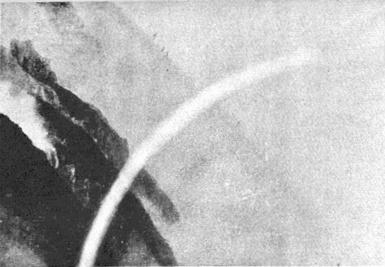
虹
［＃改丁］
海洋は、廣さと、自由さと、伸々しさと、同時に動と靜との感じ、靜寂と叫喚、動亂と平穩との美を與へ、森林は集合生活、團體生活、複雜多樣、混淆秩序、一種複合の美を見せ山岳は立體的、彫刻的、線の美、面の美を盛り上げて動ぜざる姿を示す。海洋が物の成しとげられたる美を見するならば、山岳は物の始まり、源泉動力の美を示すのである。
山岳には一種の深い靜けさと、同時に、この靜けさの中から起る不思議な音樂とまた平地では見られない、純な、澄み切つた色彩の變化と、それ等を綜合し、統一した全躰的な大觀的な、總てを包む氣分が、ことに、その頂上に於て抱かれるものである最早や仰いでも、紫の空より外には何物もないといふ感じの中から、一種永遠に對する不可思議な力を覺え、そして氣分は純化せられ、歸一せしめられ、超脱せしめられ、淨化した爽かさを味はしめられずにはゐられない。
「ユングフラウの頂上に立つものは、一種の清爽な、同時に敬虔な情に打たれる。大自然が縷彫したこの巨きな藝術はその存在そのものまでが直ちに理想である。こゝにイデアリスムとレアリスムとが握手する。此處に我々は確かな存在性と、無限に憧るゝ情念との融合を見出す。我々の頭上を覆ふ紫紺の空は果しなき高さを示し、我々が踏む山の頂は大地の動じなき確かさを見する。――ユングフラウの中腹には、無數の草花が、短き季節を爭つて、咲き亂れてゐた。氷河を隔てた日當りのよい草原には、鈴の音を鳴しながら、牛の群がさまよつてゐた。登山鐵道の軌道は、八月の日光にも消え殘つてゐる雪の間を縫つて、墜道をくぐり、溪の上を傳はつて、次第に頂上へ導いて行つた。――雪に輝く尖頭と氷に埋められた溪谷と、麓の村々と、山の裾をめぐる深碧の湖水と、それを縁る常緑樹の林と、下より上へ上より下へ、眞白な雪のちぎれて飛ぶ蒼空の中へ、この麗はしくて雄しい巨峰が、身をとつて描き出した一大彫像は、理想を現實へ現實を理想へ示す一つの象徴として、嚴然として屹立つてゐた。」と私は嘗て書いた事があつた――私はこのユング・フラウの頂上へ立つた時の感じを忘れることは出來ない。そして時々の思ひ出となつて私の心をとりしづめて呉れると同時に、私の情念を高く放つて、淨化し洗滌して呉れる。
山岳は、人間が地上に棲息する以前から恐らく、存在して、人間が初めて目を見開いた時から、その眼前へ、その偉容と美裝とを輝かしてゐたことであらう。けれど、この眼前に存在する美を、或は遠く地平線上に浮ぶ美の姿を、人々は目には映ぜしめても、それを美しいとは感じなかつたらしい。或時期が來るまでは、この天地間に大きく彫み出され、築き上げられ、描き出されてゐる美も、その存在を認められず、隱されてゐたのである。その時期が來ると、俄に眼前に眞白い山が浮び上つた如く、富士山が一夜にして湧出した如く、人々は驚いて、爭つて、その美を仰ぎ、拜跪せずにはゐられなくなつたのである。
この時期は歐羅巴と日本とでは、日本の方が遙かに早いであらう。萬葉集の時代から日本人は既に富士の美をうたつてゐる。けれども全體として山岳の美觀を味はうやうになつたのは最近のことである。歐羅巴では、この山岳の美が一時に人間界に開放せられたのは、地上に大革命のあつた後、ロマンティスムの文藝が初めて情緒を開いて自然を感じ初めた時、即ち十九世紀初頭である。
十八世記末［＃「十八世記末」はママ］までは、山岳といへばむしろ恐ろしい場所であり、惡魔の棲家であり、足を踏入る可き處ではないかのやうに思はれてゐた。グリンデルワルドといへば今日では、アルプス山中の最も感じのよい、空の美しい、空氣の清い、そして明るい朗かな谷間であるにも關らず、千七百六十年にグリュンネルといふ人の記述によれば、全く地獄のやうな永久の闇の立罩めてゐる谷間で、寒さは身を切るばかり、そして底知れぬ水溜のある、恐ろしい肉食鳥の飛んでゐる場處とされ、そこへ足を入れたら最後二度と出て來られない谷間とみられ、即ち歐羅巴大陸の中で、最も恐ろしい、氣味の惡い場所の一にせられてゐる。
これほど、山岳とか、自然とかの觀方は幼稚な、恐怖に充ちたものであつた。それ故、十九世紀末までは、山を描いても、それは平野から麓まで、或はせい／″＼山の中腹までの美しさであつた。ルウソオの如き自然の解放者でさへも、そして親しくアルプスを二囘も徒歩で越えてゐる人でありながら、自然の、また山岳の偉大なこと、或はその壯美とかいふことには、いまだ思ひ及ばなかつたのである。彼の目に映じた自然の美は、森間の空氣の美しさ、草花の香氣、或は谷間の牧人等の生活であるとか、穩かな、靜かな方面の美であつた。
それから、ロマンティスムの文藝が盛んになると共に、始めて山岳全體の美しさ、モンブランの壯嚴とか、伊太利アルプスの大觀とかいふことが、切實に味はるゝやうになつたのである。英國の詩人、コオルリッヂの「モンブランの頌」とか、シヤトオブリアンの「モンブランの旅」とかが殆ど初めてこの隱れたる美を人間界へ引き出したのである。
佛蘭西では、山岳の美を稱ふる時、第一にはアルプスであり、第二にはピレネエである。
この兩者への旅行記は多くの文藝家の手によつて書かれてゐる。ことにピレネエのものには、ユゴオのもの、テオフィル・ゴオチエのもの、更にイポリツト・テエヌのものなどいかにも清新な、爽かな氣分に充ちたもので、それと共に、精細な觀察、詩的情調が漲つてゐる。
モンブランといふ山は、ことにフランス人にとつては、最も美しい山の代表のやうになつてゐる。リヨンのフゥルヴィエルの丘の上から、遙か遠い地平線上に浮んでゐる姿、シャムベリイから眺め、瑞西のジュネエヴから眺めた姿、いづれも純白な、輝かしい、美しさを見せてあらゆる詩人の嘆賞の的となつてゐる。「美しき合調氣高き調和、他に於ては晦暗なものが、此處に於ては麗朗の中に漂ふ」とミシユレはその著「
テオフィル・ゴオチエの「月曜の休暇」にはこの山の美を説いてやまない。「夜の間に、モンブランは、身を包んでゐた薄沙を投げすてて、秀麗な裸形となつて現はれた…… ……そして、幾里の距離を置いてゐようとも、これに觸るゝには、ただ手を伸ばしさへすれば足りるがに思はれた。」いかに人間に近く、この美しい「氣高き姿したる聖なる美神」が立ち現はれたことであらう。昨日まで隱れてゐた美そのものが、突如として眼前に浮び出た驚喜を見せてゐるのである。
ラスキンの「近代畫家論」は、審美眼をもつて自然の形象を論じた劃時代的作物である。
そして人間の繪畫、彫刻、建築と、自然の關係を理智的に的確に立證した不朽の名著である。――而して、この兩者の關係、特に山岳美と人躰美との關係を、實際、具體的に成形的に我々の眼前に浮ばせて呉れるものは、近代の巨匠ロダンの彫像である。我々はロダンの諸作を通じて、近代人の痛苦と、反抗と、そして一種の押えがたき隆起の力を認むると同時に、その諸の裸形を表出する線に、山岳を圍む、力強き、默しては居れど怠りのなき、緊張した、隆起を認めずにはゐられない。
恐らくこれが、ロダンの彫刻美をして古典彫刻の美と特に區別せしむる要點の一つであるに異ひない。解放せられたる自然力と近代人間力との一致點である。
日本の著名な山岳の頂上は、大方佛者等によつて開かれたものであつた。それは彼等が始祖の業蹟を追ふたのか、それとも超脱、純化を生命とした教義の本來に從つたのか、或は難業を修道の必須條件とした爲めか、知らないが、日本の高山の多くは早くから多少とも佛教の關係を持つてゐた。そして其處に佛教の超人間的な一面がうかゞはれる。これに比ぶれば歐羅巴のクリスト教は、寧ろ平原の中に育ち、或は森林の中から出て來て、より多く集合生活的、即ちより多くの人間味、日常生活味を含んでゐる。――古來から日本人一般としては、登山の習僻があつた。隊を組み、講社をなして「お山へ」登るがの［＃「登るがの」はママ］一種の義務の如く見られてゐた。日本人にとつては、山頂を眺むるに一種の崇拜の情なしではゐられなかつた。日本人にとつては、山岳は惡魔の棲家ではなくして、寧ろ聖地であり、靈地であつた。其處へ足を入るゝのは禮參であつた。惡魔を恐るゝのではなく、神佛の靈地を汚がすことを氣づかつた。そして參拜のゆるさるゝ個所だけには是非とも登らねばならぬことにされてゐた。今日でも、地方によつては、その地方の高山靈山に一度び參拜しないものは一人前の青年とは考へられない地方が多くある。
所謂、アルピニストと呼ばるゝ純粹の探嶮探美の人々が登山を初むることになつたのは、日本に於ては極めて最近のことのやうである。そして日本の中央山嶺が日本アルプスと呼ばれて、多敷の登山者を引きつけるにいたつたのは一層最近のことである。それ以前は、山岳は講社を組んだ一定の禮拜者以外には見向きもされなかつたものであらう。
信州の温泉地などへ行つて見れば解る。從來の家屋は所謂日本アルプスなる山嶺に面した方面は盡く壁にして、その方面へは窓を開けない工風がしてある。今日までの人々にとつては、その美しい日本アルプスなるものも、ただ冬期に嵐と雪とを吹き送る厄介なものたるに過ぎなかつたに異ひない。即ち舊來の家は盡く、この大山嶺に對しては脊を向けてゐる。然るに此頃の新築家屋は盡くその方面へ窓を開ける。のみならず、舊い家とても樣々な工風をして、脊後へ口を明ける事を初め出した。――日本人にとつても同じく十數年前に初めて、この中央の大山嶺は突如としてその美容を我々の眼前へ輝かし出したのである。
この山嶽の文藝的表現はどうであらうか。遠景美觀、或は中腹以下の人事と密接に交渉ある方面から次第に進んで、やがて絶頂の美觀がその表現相を持つことになるのであらう。海洋と共に自由に伸びんことを求むる日本人は同時に、この山嶺の永續性、隆起力を體得して、この力を、この美を人間の中へ解放せしむることは、決して無益なことではない。
スタンダァルは云ふ、若し巴里の附近に、ドオフィネに於て見る如き偉大な山岳があつたならば、確かに佛蘭西文學は他の生面を持つてゐたであらうと。我々もまた、東京の近くに日本の中央山嶺のあつたことを望んでさしつかへなからう。現在の日本文學はあまり都會的である。あまりに部分的である。少數者の手中で作られて、配布せられてゐるに過ぎない。我々の前に俄かに出現した、この新らしい自然美が、ただに好奇と探嶮との眼にのみ映ぜられず、その巨きな投影は、廣くのびて、都會の上にまで達したからとて差しつかへはないはづである。山嶺の氣をして動かしめよ、日本の中央にそそりたつ巨人をして物を云はしめよ、日本の現在の文學にもまた他の一新生面が開けて來るであらう。
［＃改丁］
［＃ページの左右中央］
［＃改丁］
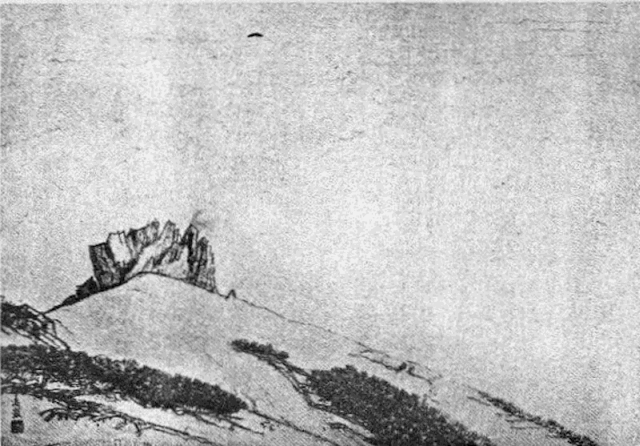
山頂の曉
［＃改丁］
雲の翼は、初めは徐々として遠山を覆ふやうにして擴がつて來たかと思つてゐると、忽ちに、谿から吹き上げる怖ろしい風が一陣、どつとばかりに絶頂の劒が峯の岩角に突當つて來た。小石が、がらがら音を立てゝ深い
雲は此不意打の爲に一層低くひらみつくやうにして、隙があらば此劒が峰の絶巓を襲つて來ようと待ち構へてゐるやうに、岩角岩角に腹をすらせて爬ひ寄つて來る。默々たる其襲來の姿！ 瞬間前に見えて居たつい近くの地獄谷を隔てゝの岩角も、既に其白軍の包み隱す所となつてしまつた。右手に稍遠く黒い水を光らせてゐた二の池の上にも、逆落しに攻め落して來る雲の不思議な手が、もうその水の面まで縱横に伸びて來た。四方から攻め寄せて來る雲の軍勢――その中を事々しく、物に取つかれたやうになつて、行者等の鈴の音が響き渡る。呪文と鈴聲と、此處に一團彼處に一團、白衣の行者共は集まり集つて、襲ひ來る雲の軍勢を拂ひ除けやうとする如く、聲を限りに呼び立てゝゐる。
が、無言の白衣軍は、一歩一歩地を占め、岩を埋め、谿を覆ひ、刻々に進んで來る。また一陣の風が吹來ると、雲の先頭はやゝ亂れて、右往左往に頭を振つて迷ひ出す。が吹き過ぎた後からは、一層勢鋭く、稀薄な空氣を突裂いて、一氣に攻寄せて來る。山の背後より偏へに攻めてばかりゐた雲は、いつか前面に
つて、偃松の上を滑り風は初め谷から谷へと吹き入つて、絶頂より少し下を、山を繞つて吹いてゐたが、今は雲の上を壓して絶巓より遙か遠く、直ちに高い天空に吹き去つて行く。その風の下を雲は爬ひつ滑りつ押し寄せて、今では只劍が峰の頂上の一角、社の立つ一團の岩を殘すばかり、全山只雲で包んでしまつた。遠巒も見えず、空も見えず、日も見えず、其空の中を陰に籠つた呪文の聲と、澄んだ鈴の音とが響いてゐる許り、さあつ／＼と鳴る風の音――雲を吹き破り、岩角を突き崩さんとする冷たい風の音、何としても今は只天地は一帶雲の影！ その中に包まれた小さな人の聲も鈴の響も風の音も、何ともする事が出來ない。得意な雲は總てを
が、風の音は次第に強くなつて來た。上から
風と雲との烈しい爭ひ、人は其中に包まれて岩角にすがり、岩陰にひそみ、
つて雲の軍勢を吹き散らさうとするのである。日は此時急に力を得て、さあつと鋭い光りを上から投げかける。光りは澄んで青白く、純白な雲の頂は、一樣に目醒めた物の如く頭を上げてその光りを仰ぐ。人は其雲の中から息をつきながら、仰いで此光を吸ひ込まうとする。日のある周圍、天上は紫に輝いて、その氣高い光りは、瞬時、下界の烈しい爭鬪の何物をも忘れしめる。
紫の空は次第にその領土を廣げて行く、日の光りは次第に強く、白雲は從つて長く伸び、天の裾遠く一帶の山の頂が、浮ぶやうに彰はれて來る。
風はまた一しきり勝利の聲をあげて鳴り渡る。山上の雲は今暫し、姿を亂して四方に散る、が直ちに陣を整へて、また絶頂目がけて攻め上る。――かくて果てしなき風と雲との爭ひ、その中を、せめてもの
［＃改丁］
［＃ページの左右中央］
［＃改丁］
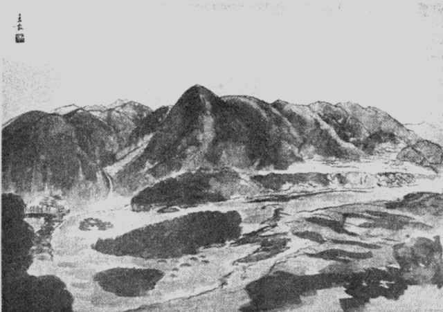
崩越
［＃改丁］
昨日あたりまで、黄葉の夕風にかさ／＼戰いでゐた畔の榛の樹が今はもうすつかり葉が落ち盡して、梢の先の先まで、風に吹きさらされ、稻はもう盡く苅りつくされて了つたが、まだ所々に長く列を作つて、掛け木に垂れ懸けられてゐる。風は西の方から枯木の枝を吹き拔けて、掛け稻の葉をさら／＼と鳴らして、空田の上を向ふへ藁すべを飛ばせながらぬけて行く。
田と田との間の堰を、音立てゝ流れてゐた小川の水は、少し前までは草の實を一面に浮ばせて、彼方此方に持ち運んでゐたが、今ではもう、堰の上の溝萩が枯れ、澤瀉が枯れ、甘草の下葉も皆黄に朽ちて了ひ、蔓草の實の、黄に、紅に、或は黒色に、樣々の群をなしてゐたのが、皆風に吹き散されて了ひ、何の音も立るものもなく、浮べるものもなく、只鷦鷯がちよつ／＼と鳴いて、小さな黒い影を時折水に落すのか、その他には白く丸い小さな珠となつて、蓬生の枯莖が搖いで影を見せてゐるばかり、水は眠つてゐるやうに、赤く銹びて、田と田との間に横はつてゐる。
此等の溝の水を一所決潰して空田の中へ注ぎ込む。水はばさばさ音を立てゝ、小さな口から一面に田の中へ廣がる。淺い水ではあるが、澄んでゐるので、畔に立つてゐる榛の樹の落木の姿も、其間を遠く空際を滑つて行く細長い秋雲の姿も、其姿を中腹にして冷たい紺碧の空に聳えてゐる一列の山嶺の頂までも映つてゐる。勿論其山頂は、もう中腹以上眞白になつて、遙かに遠く仰いで見られる。不圖此田の畝へ來て、脚の下に高嶺の雲のゆれてゐるのを見とめる時、何とも言ひやうのない寂しさが胸に湧く。
朝寒むの烈しい時、田の間の清水からは、白靄が立つて榛の樹には霜の華が咲く。紺青の空は冷い光をすべらせて、西山一體の連嶺を眞紅に照し出す。朝早く出て北の方、高瀬川の岸に沿うて一層深く進んで行くと、遙か遠く大町の市街が、如何にも山上の町らしい趣きを見せて、北日本アルプスの背景に包まれて立つてゐる。日はもう東の空に力強く光を發し初めた。
不圖見ると路際の田の面に、水が一面廣くたゝへられて、其上に一帶の眞白い嶺がくつきり影を落してゐる。鮮かな大きな山の姿、それが手を伸せば達せられさうな所に、ふるへて見えてゐる。此時は寂しいとよりは、寧ろ恐ろしいやうな氣もせられた。次第に山に近くなつて、山の威嚴が近く身に迫つて來るやうで、思はず目を見張らずには居られない。
が、薄墨色に空が曇つて、其雲から洩れて來る風が、しはりしはりと人の顏を氣味惡く撫でて吹いて行く時、道行く人もほとんど絶えて、黄昏は次第に重く壓するやうに迫つて來る。その時、田の水は澄んで、灰色空を胸に映し、其空の中に、一列に並ぶ山々の峰を、かすかに浮ばせて見せる。
この時の山の姿の淋しさ、漠々たる灰色は無限の空を覆うて、其中に頂を見せてゐる一帶の山、空際に見えるものとては、此淋しい山の頂だけ、其外はたよりない雲の姿ばかり。寂しい中にも、一種言ひ難い懷しさが籠つてゐる。山を見て涙ぐまるゝ夕暮の一つは、このやうな秋の晩方の水に映る姿である。
私は、此枯田の水に映る山の影を見るときは、引きつけられて、いかなる時でも、其田の畔を長く立ち去る事が出來ない。淺く澄んでゐる水に映る山の影、ちよつとその波がゆれても山影はゆれる。それだのに、靜かに夕ぐれて行く時は、一微動さへなく、頂の上を、鳥が一つ舞つて行くのさへ姿を落してゐる。
夕日の照す場合によつては、眞白な山がうす紫になる。其紫が次第に黒味を帶んで來る。雲のある夕方ならば、いつもより早く山影は姿を隱す。雲のない夕方ならば、澄み渡つた空が白く光つて、如何にも冷たさうで、それが次第々々に光を失つて、山の尖つてゐる頂と溶け合ふやうになつて何も見えなくなる。が、水には、同じく黒い空がそのまゝ落ちて、夕闇の中でも、其水は冷い光を漂はせてゐる。
闇に光る水の色、私は幾度遲くまで、只一人きり、田の畔に身をこゞませて、其光を見てゐた事であらう。何人一人、闇の田の畔に、人が一人蹲つて、水を見てゐようなどと思ふものが有らう。たまたま用事を急いで、村路を隣村へ出て行くものがあつても、黒い一つの團りを、田の畔に見付けたらば、恐らく柳の枯木の圓くなつてゐるのだらうと思ひなして、知らずに通り過ぎて行つたかも知れない。
もう疾くに消えてしまつた山の影が、まだ私の胸には印せられてゐて、凝と見つめてゐる水の面には、時々それが浮び出て來るやうに思はれる。冷い風が――末秋の夕方の風が、闇の中に、波を彫むやうにして、時々顏に當つて來る。不圖氣が付いて、目を上げて見ると、眞暗な闇中に、遠く天際に一列の雪を頂いた連山が、ありあり見えるやうな氣がする。はつと思ふと、瞬時にしてまたもとの闇が一面に鎖してしまふ。今來て自分の顏に當つた冷い風は、あの闇に包まれてゐる山の頂から遠く吹きおろして來たのではあるまいか。
また默して冷たい水の面を見つめてゐると、闇の力は四方から壓して來て、自分の體躯はいまにも闇の中に溶け込んでしまひさうである。もう立上る力すらなくなつたやうな氣がする。水邊の重い黒い空氣は、上からも周圍四方からも、身を押付けて、動けなくしたのではあるまいか。水にも何の音もなく、空間にも、空にも、地上にも人界にも天地は只空寂、其空寂の中に包まれて、私はもう聲を立てる力すらなくなつたのではあるまいか。事實聲を擧げて見る氣にもなれない。立ち上る勇氣もない。寒いのか、冷いのか、何の感覺もなくなつて、無心で闇と水とを見つめてゐた。
水はやがて氷りつめる時期が來る。秋と冬との間は、劃然たる區別もなく、霧か、靄か、雲か、小雨かの中に冷たい秋は、寒い冬になつて、田の面の水は盡く凍りつめて了ふ。村の兒童等は、朝々其氷の上を踏んで、ミキ／＼音のするのを悦んでゐる。日の光は滿面に照して眩しく反射するが、もう冬になり切つては、山の影も高くない。山と枯田の水とは暫く關係がなくなり、互に日の光を照り返してゐるに過ぎない。冬には、秋の末に味はふやうな、柔しい寂しみはない。寧ろ澄み切つた鮮かな日が多く續く。でなければ、一天かきくもらして雪が降りしきる。何れにしても、豪宕な感じは起るが、末秋のやうな、やるせない柔しみはない。淋しみはない。
細かに波を彫んで、人々の胸に微動を生ぜしめるやうな水は、如何なる場所にも皆姿を隱してしまひ、固い氷結した輝かしい氷が目につくばかりである。此氷が溶けて、流れて洋々たる眺めとなるまでは、山は柔しい、懷しみを人に示さない。嚴たる雪白の偉容は只仰ぎ見て慴くばかり、取縋る柔しみは一點見せてもゐない。
が、山巓の稍々低い南の方から、なま温い風が、高原地方へ吹き込んで來る時、山の雪白の衣も少しづゝ解けて來る。田の面の水がゆるんで、小流に水の音が鳴りだして來る。空田へ湛へておいた水は、一時他へ落して、田を鋤き返し、肥料を加へてまた滿面に水を充たす。
野も緑、山も緑、田には水が充ちて苗は昨日か植ゑ付けたばかり、水に浮ぶやうにして淺緑をたゝへてゐる。爽かな、伸々する心持、稻田を隔てゝ小高い丘の上には麥が黄になりかゝつて一面に連つてゐる。
此時、其水田を隔てゝ、小高い麥の丘を隔てゝ、前面は一列のまだ雪白い山々、山の上の空は水色に澄んで光がある。氣が付いて見ると、ひた／＼と田の畔まで充してゐる其水の面に、碧の空と共に、前面の列峰が姿を落してゐる。
秋の末に見る悲しさはない。若々しい輝かしい希望多き雪の山、その山は豐かな水に影を落してゆれてゐる。鮮かな目醒むるばかりの景色だ。
旅人の姿は甲斐々々しく路上を通つて南へ向つて行く。麥の穗が風にさらさらと渡つて旅人の笠を吹く。田の畔へ來て、其水面へ映る山の影を見てゐると、常は壓せられ、押へ付けられてゐた希望がむら／＼と湧き上つて、若々しい氣分が押へきれない力を以つて起つて來る。何處か旅へ出て見たい。吹き過ぎて行く風と共に、四方へ發散する日の光りの輝しさを追つて、青空を舞ふ雲の姿の恣に委せて、何處と當てどもなく歩いて見たい。
苗のさきが一列にそろつて風にゆれてゐる中に、大きくゆらいでゐる其山の影、蛙が勢よく水に飛び込んで、波を立てると山影も亦動く、青色と、白色と、いかにもけじめが明かで、山そのものが動き出して來るやうな氣がする。
青草の堤には、蛇苺の實が紅く、甘草の花も紅く、蔓草は伸び、柳の藪が白い絲を吐き出してゐる。
がわ／″＼がわ／″＼、蛙の聲は初夏の新天地を謳歌して、水に輪を描き山影をかき亂して、彼方でも此方でも喧しい。雨季に入つて水量がまし、堤も切れるばかりにひた／＼と充ちてゐる。雨雲のまきては伸びる山の頂、其豐かな水の中に、雲も雨も山も、みな姿を落してゐる。どれほど灰色雲に包まれてゐる天地でも、梅雨期に於ける山の影は決して寂しいものではない。雲の姿と共に如何にも賑かな不思議な感じを起させる。
麥が刈り取られ、稻の葉が次第に伸びて來ると、もう山影を映して見るべき場所は何處にもなくなつてしまふ。草の長く伸びて居る裾野の上へ、斜に入日を受けて、黒い不思議な長い姿を投げてゐる事はある。けれど、これは山影の映つたのではなく、山影の描寫せられた黒いシルエットで、一層奇怪な感じは起るが、若々しい感じも、寂しい懷しい感じも起らない。
併し此黒い山影が斜に草の上へ映し出されて見る時程、不思議な感じのすることはない。黒い巨きな何物かの影、巨大なスフヰンクスの影、地球の表面に於ける陰影の中で、最も偉大なるものに違ひない。
長く伸びてゐる青草に、風が颯然と渡つて靡き伏すと、ゆらゆら搖いで此黒い巨像は波たつ。遠くから見てゐると、眞黒な大蛇が草の上を腹爬てゐるやうにも思はれる。それが冷い夕方の風であるならば、見てゐる者の肌にも粟立つやうな思が迫る。此黒い巨きな波は、裾野の草に埋つてゐる大きな岩に打當つて激し立つ。影も搖ぎ、山自身も搖ぎ、其連峰は今にも動き出すのではないかといふやうに思はれて來る。
日が山脊に落ち盡くすと、黒い陰影は急に姿を收めて、草の上は明るく、山は不動の姿を取つて、嚴として草野の末に天際を劃して立つてゐる。
［＃改丁］
［＃ページの左右中央］
［＃改丁］
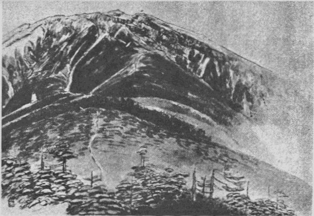
田ノ原小屋より
［＃改丁］
春先き、家々の軒端近く繞りめぐつてゐる小川の氷が碎けて、白のさゝ
南からの風は、時々どつと、此小村の上を吹き捲くつて行くのであるが、その吹き過ぎたあとからまた、追掛けるやうに、輕く吹き過ぎて行く小風がある。一條のうねりうねつた村道は、此しのび風の通り路のやうで、路に向つた兩側の家の軒に吊した乾葉が、がさ／＼、がさ／＼、其たびごとに搖れてゐる。
その頃になると、風に吹き出されたやうに、足仕度をした旅人が二人三人位づつ、峠をおりて、何かの小荷物を肩に、小急ぎに村を通り拔けて、北の方へと向つて行く。村人は地
山を前に、山を後に、六七十軒の小村、前面の山は東の峰、後方は稻田、桑畑、草野原が連なつて、二三里隔てゝ日本アルプスの連峰、その支脈が出張つて、近くは半里位まで、村の背後に迫つてゐる處もある。
東の峰は草山で、下半分は松林、雜木林が取り圍んでゐる。村人が一年中の薪炭も、此林から出れば、稻田の肥料にする青葉も馬を飼ふ秣も、此草山が供給して呉れる。六千尺位の高さの嶺が立ち連なつて、南の果てはその山の肩を見せ、その肩を描く線は長く下へ曵いて、八ヶ嶽の裾野、諏訪湖の方へと走つてゐる。
地
林の中で働いてゐる人々は、夕風が林に吹き込んで、ごうと鳴り渡つて行くころ、松の枝の束を脊にして、林を出て來る。振返つて、仰いで見ると、草山はまだ薄赤く夕陽を受けて、その光は下の方から次第に、暗黒色に喰はれて行くが、麓の松林の上、小村の上を、薄闇が包むころまでも、その頂はほの明るく輝いてゐる。
峰に消え殘つた雪は、種撒き爺の形を顯はして、村人に播種の時期を教へてくれる。此
山の麓の雜木林の頂きが薄紫になつて來た。東の峰は下から順序に一抹又一抹、淡青の繪具を吹き掛けて行くやうに、青味を加へて來る。日が山の南の肩の一角から光を滑らして、村の家々を包む時は、西の嶽が暗緑の濃厚な色を呈して、青い空にくつきり輝いて、爽かな感じを與へるが、日が次第に天に冲して、斜めに東の峰を照り付けると、淡青の色は薄絹の艶を増して、滑らかな心持の好い感じとなる。
落葉松の芽が青く、楢の芽が白銀の色に吹き出て來る。春雨はしと／＼しと／＼、野をも山をも籠めて連日降る。白い靄は東の山一帶をかくして、村の上にもたなびく、村人は雨の中を蓑笠で田へ出て土をこね返してゐる。
五月の上旬雨が晴れ上ると、新緑の色に包まれる山の姿の美しいこと、麓の森から一連らにつゞいて、山の頂まで緑の色、その緑の色の上を壓して、空色が薄くかゝつてゐる。村の中に、或は村の外廓をめぐつて大きな槻の古い森がある。五抱へも六抱へもある古樹が、眞直ぐに空に向つて身を伸し合ひ、杉、檜、榎をまぜて、此處に一團、彼處に一團と、こんもり茂つて立つてゐるが、此古樹の新緑は、如何にも爽かな色をして、晴やかな日の正午頃は、遠くから見ると、緑の色が燒え立つ［＃「燒え立つ」はママ］やうに輝く。此等の森は皆太古の面影を傳へてゐるのである。その昔は、此山間が一面皆此等と同じ大樹に掩はれてゐたのであらう。それを何處からか、人が這入り込んで來て、その森を伐り倒し、草を切つて次第に家を建てだした。その當時は森林の民で、一軒二軒の家が森と爭つて生存して居たものらしい。次第に森を制伏して道をつける。片端から樹を伐り倒して、遂には山を立ちかくしてゐた大きな森をも、跡方無くしてしまつたのであらう。その昔の面影を止めてゐるのが、此等の一團二團の緑の大塊である。
椋鳥は群をなして何處からか、此等の森を襲つて來て、キア／＼キア／＼と終日鳴き騷いでゐる。苗代鳥といつて、此鳥の一群が來ると、村人は苗代田を作るに忙しくなるのである。
林の小徑を縁取つて、木瓜の花が紅に燃える。小梨の花が薄紅をぼかして、藪の茂みから薫りを立てる。鬼つゝじの花は林の上、山の裾に、一つらに咲き出して、東の峰は薄紅と淺緑とを織り交へた衣をまとつて來る。
五月雨が降りつゞく間に、稻田は大方植付がすんでしまふ。東の峰の緑の衣は一層色を濃くして、西の嶽の暗緑は猶一層深くなる。五月晴れの一日、水蒸氣の立つ加減でもあらうか、山はころび出したやうに村近くに迫つて、大きな眞青な光る山が直ぐ鼻先きに立ちふさがる。手を伸ばせばとゞきさうにもある。懷しさも懷しい。その青い色の中に包まれて、ごろ／＼寢ころんで見たいやうな氣にもなる。が、その山影があまりに近く、あまり大きいので、恐ろしくも感ぜられる。兒童等は「やあ山が近くなつた、山が近くなつた」と手を叩いて大騷ぎをしてゐる。
その頃村人は、稻田に踏み入れる青葉を山に探りに行く。その採りに行く初めての日が定まつてゐるので、その日には村中、早朝薄暗い中から、松火を燃やして、山へ登る。麓の林を出拔けると、共有の草刈場、藪を切る場處が定つてゐる。青草山の中腹で、村人は此處をば野山といつてゐる。松火の火が此處まで來る頃には夜が明ける。思ひ／＼に朝風に吹かれながら、其處の藪、彼處の草原を刈り始める。挽いて來た馬をば放して置くので、その馬は谿へおり峰へ登つて、自由に嘶いてゐる。――山は
が、六月上旬、稻田の植付けの頃は、よく旱魃の事もある。その時は、此東と西との山間の二村三村が連合して、雨乞ひをやる。鐘を鳴らし太鼓を打つて、幾手にも幾手にも分れて、松林の中を、峰を目がけて登つて行く。そして行く先き／″＼の草原に火を付けて、雨を呼ぶ。此山の頂きづたひ、北へ／＼と三四里も行くと、鉢伏といふ此連山中の最高峰がある。その高峰の絶頂まで行つて、其處で幾手にも別れた者共は一つに落ち合ひ、盛んに焚火をし、祈祷を呪し、山靈を覺醒させて、雨を呼ぶ。斯うすれば必ずその夜のうちに雨が降る。行く／＼草原に放つ火の煙は夕方遲くまで山一面に爬ひまはつてゐるが、その夜の中に降り注ぐ雨にすつかり消されてしまふ。
晝間村人等が聲を限りに呼んだ雨は、黒雲の中から山を壓し、森を叩き、いまや人々の夢を押し鎭めるやうにして降つてゐる。山から森へなびき、森から人家へかけて、闇の中を、雨に追はれながら、晝間の草野の煙か、それとも、迷ひ出した死靈かなにかのやうに、薄白い靄が消えさうにして、靡いてゐる。山も、森も、人家も、皆此雨に咽喉をうるほすやうに、頭から注ぎかけらるゝのを悦んで素直に立つてゐる。西の嶽にも黒い雲が湧く。その嶽の麓からつづく廣野にも、雨の足が太く、繁く、暴く、通つて行く。その雨の中を、村人の家々からは、燈火が明るく、爐の火が盛んに燃えてゐる。話し聲が賑かで、戸外を、悦しさの餘りか、蓑笠の眞黒いものが、雨を犯し、闇を突き破つて飛びあるいてゐる。流れの音がする。水車がきしる。蛙の歌が聞える。物皆が望のかなつたのを謳歌してゐるやうだ。
眞夏が來て、稻の畔には、紅い百合花に似た甘草の花が、青地の上に星を連ねたやうに咲き出す。人々の家は養蠶が眞盛りで、峰をすべつて、朝夕おりて來る雲霧の姿にも、皆心を痛めてゐる。次第に日光の射す度が強くなつて、丈の長い草がゆれ出す。鵞絨天の［＃「鵞絨天の」はママ］禿げかゝつたやうな色に山は光るが、大旱が續くと、朝から夕方まで、東の峰に薄靄がかゝる。それから一月ばかりして九月の初旬になると、山全體が乾き切つて、煙草の喫ひがら一つ落ちても、草に燃付き易く、めろ／＼めろ／＼と燃えて、三日も四日も消えず、幾峰幾谿に亙つて燒き拂ふ事がある。私は此樣な山火事の恐しさを今でも覺えてゐる。
それは何でも九月上旬の事であつた。村人が乾草を刈りに、群をなして山に登つた蒸し暑い日の事で、もう山間の夏が最後の強さを示してゐる頃であつた。大方の人が山へ登つて、村中はひつそりしてゐた。その正午頃の事であつた。「やあ大變だ大變だ。」と何人か大きな聲を擧げて、村の途を驅け過ぎて行つたものがあつた。何事だらうと、家の中に居殘つてゐた者は、急いで飛び出して見ると、村の正面の東に當つて、峰の中腹に、大崖と呼ぶ大きな凹地をなした藪だたみがある。その大崖の凹地一面が、黒煙と火炎とに捲かれてゐるではないか。煙は崖の中から爬つて、上へ上へと登つてゐる。その煙は山の頂から離れて、空中へと擴がつて行くので、日は蒸し返して暑苦しく、崖から下の方へも、野火は勢好く手を伸ばして、松林のあたりまでも、やがてはおりて來さうに思はれる。
ぱし／＼と、藪や、矮樹やの燒ける音が聞えるやうな氣がする。笹葉や、草が燒けて、風に吹かれ、灰になつても、元のまゝの形をして、村の道の上までも舞つて來る。――村の者は大方山へ行つてゐるので、何をしたのか、と殘つてゐる者共は集つて、恐しい此野火を見ながら評定をしてゐた。
火はなか／＼止みさうもない。それどころではない。益々燃え廣がつて行く、初めは大崖の凹地の中だけに煙は渦をまいてゐたが、今では、中から出て、四方に向つて盛んに手を廣げて行く。凹地の中では、所々に火の立つてゐるのが、見えるが、煙はもうすつかり逃げ出して、大崖全體が眞黒な恐しい光景になつてしまつた。上へ／＼と燃え上つて行つた火は、頂上を越えて猶東方へ山深く燃え下つたとしても、別に心配なことはないが、村の方へ向つて、燃えおりて來ようものなら大變だ。森林を燒き拂つて猶その炎の舌は、人家一團をも甞めつくさずば止まないのかも知れない。
日は次第に西に
つて、夕陽が正面に東の峰を射る。煙は凄く時々物に激する如く高く登る。その煙が舞つて、北の方へ峰づたひ行く、その影が不思議な形をして野の上に落ちる。日は沒したが、山火事は止まない。その中に村人は疲れ切つた姿をして山からおりて來る。「駄目だ、駄目だ、到底も駄目だ、これからその夜の物凄い光景といつたら、何とも言ひようがなかつた。兒童等は戸口へ出て來て、親達の袖にぶら垂つて、その間から顏を出して山の方を見てゐた。立ち登る煙と、上からおつかぶさつてゐる雲と、火はそれらの雲に反射し二倍も三倍もの大きさになつて見えた。とう／＼といふ炎の煽りの音がする。今は草山になつてゐても、昔時は大木が立ちこめてゐたその大木の根が地中深くまで燃え込んで行くのであらう。火勢は八方に廣がるが、同時にまた一ヶ所に長く止つて執念く燃えてもゐるのである。
祈祷を上げながら打振る鈴の音は、夜陰の村に響き渡つて、山火と相對して一層凄慘の感じを與へた。
其夜は遲くまで起きてゐたが、私は遂に耐らなくなつて寢てしまつた。その夜の中に急雨がやつて來た。火は森まで燃えさがらず消えて了つた。
その燒跡は大きな怪物が口を開けて向つてゐるやうに、眞黒くなつて二三年後まで消えずにゐた。夜などは此の燒跡が今にも上から押つかぶさつて來るやうな氣がして、殆んど一歩も戸口へ出て見る勇氣はなかつた。
十月になると、山燕の姿も見えなくなつてしまふ。時々急雨が山頂に降りそゝぎて來たなと思つてゐると、天一面を覆つて、眞黒く群れて縱横に飛び交はしてゐる山燕の幾千幾百を見掛けるのであつたが。十月に入つて暫く暖かい日よりの續いた後、昨日まで折々、どつ／＼と、一陣又一陣、里へおろして來たその燕の群が、今日はもうすつかりゐなくなつてしまふ。と、里は稻苅りに忙がしい。濃い霜は山から、森から、稻田、村道一帶の上を眞白く包み、柿の葉が眞紅になつて、ぱらぱらツと散り、桑の葉が黄色くなつて、ぐつたりと地に落ちる。山の頂には、薄雪がかゝり、それから下、森に到るまで、矮林も藪だたみも、紅く染つて、夕日が照らしつけると、沈んだ紅色をぼかし出す。西の嶽は、もう雪が眞白で、濃い紺色の空に劍のやうに聳えてゐる岩角が、いかにも冷たさうだ。稻刈りが終つて、年の暮近くなる。雪は降つたり消えたりして終には、東も西も山は雪を頂き、村の家もその下に埋つてしまふ。東西の山はそ頃［＃「そ頃」はママ］一年中で最も莊嚴な色を見せてゐるのである。
朝日がぎら／＼と雪の峰、雪の谿間を照り付けると、薄紅の絹地を張つたやうになり、日が傾いて、西の嶽に沒してしまふとその後の東の峰の色はうす紫に茫つと霞がかつたやうで、それに、向つて凝乎と立つてゐると、道の上を一人の通つて行く者もなく、流の音もなく、うす紫の山は次第に暗色を交へて、前へ前へと迫り出して來るやうであつた。
［＃改丁］
［＃ページの左右中央］
［＃改丁］
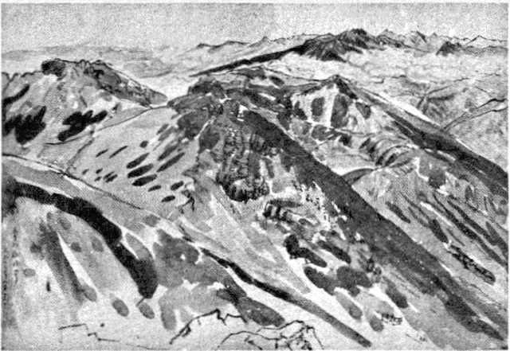
御嶽頂上より
［＃改丁］
嘗て政教社風の文章が多くの愛好者等を持つてゐた時代、明治の二十年代にあつては、志賀重昂氏の「日本風景論」なるものが、日本の山岳美を初めて、漢文口調で書き現はして文章に描かれた南畫風景ともいふべきものを、人々の前に展開したのであつた。その時代では、山岳は眺むべきもの、遠望すべきもの、畫中に於て鑑賞すべきものといつたやうな感じしか人々は持つてゐなかつたに違ひない。
今日でこそ信飛連山を眺めるに最も適してゐると思はれる信州の湯泉地なぞでも、明治二十年代なぞでは、山の方へ向いては窓一つ明けてなく、家は皆な西方一帶の連嶺へは背を向けて建てられてゐた。西山一帶は冬の嵐を捲いて來るもの、雪を吹き送るものとしか思はれてゐなかつた。それが最近二十年來は、家の向きをぐるつと更へるとか、でなければ背後へ窓をつけるとかしなければ巾がきかなくなつて來た。日本アルプスといふやうな名稱もその頃から流布せられ出した。信州の新聞の報導するところでは、最近の登山者は年々三十萬近いといふのである。しかもその登山者等の服裝は、決して往時の講者等の白衣、金剛杖、
嘗ての畫中に於てのみ眺められたる突屹たる南畫風景の山岳は、今ではまことに親しみ易い、手のとどく、呼吸の通ふ洋畫風景となつて展開してゐる。そしてその連嶺の麓の原野、田畠にいたるまで光景が一變してゐる。往時は夢にも知らなかつたポプラの樹が、到る處に高く聳えて、その
明治三十年代の初め小島烏水氏の「扇頭小景」なる書物が出版せられた頃は、まさにかうした自然の風景の變化が起りかゝつた事を意味するのである。これは遠望し概觀した風景論ではなく、親しく踏査した自然美觀の描出であつた。それ以後の小島氏の登山文藝は、「不二山」「日本山水論」「日本アルプス」（四卷）その他の多くの著書と、更に日本山岳會の創立の事業とによつて、登山愛好熱を一般に高め、汎めたことは改めて説くまでもないことである。
山岳美の發見といふことは、勿論山岳そのものと親しくなることによつて初めてなされる。冒險の興味は征服の興味である。今日もなほ地球の表面で人跡未踏の山岳が相當多く殘されてゐる。しかも年々それへの冒險征服が企てられ、失敗もし成功もしてゐる。未踏の地を開くことは單なる好奇心の滿足ばかりではない。暗默の間に人類の生存欲の發展を劃してゐることである。日本アルプスと呼ばれる幾百の連嶺が、今日では殆ど人の知らぬ頂上とてはなくなつてゐるであらう。けれど、年々の登山者にとつては、初めて登高の快味を覺える人もあるであらうし、またその快味を繰り返して味はつてゐる人もあるであらうし、冬山夏山の登攀のテクニツクの研究、天然現象の研究、及びそれに對する對策なぞ、決して一時の興味だけなぞでは充たされぬ、科學的な方法が年々工夫されてゐることである。それでも未だ年々罹災者があるほどに、相當な危險律の伴ふ冒險である。
この冒險と征服との間から一種の文藝が當然生れて來る。登山文藝と假りに名づけることにする。これは一種のルポルタァジュでもあれば、また日常生活とは全く異つた環境に於ける驚異感の披歴でもあれば、努力と汗とでかち得た心境の展開でもあり、そしてその表現は總じて卒直で、爽かで、こだはりがなく、うるささがない。かうした登山文藝の出版は年々相當數に登つてゐるので、勿論、總てに目を通すことなぞは出來ぬ。幸ひ同じ校舍に學校の山岳部の集會處があつて、山岳に關する東西の文獻が可成り整頓して集められてゐるのを、山岳部の一人の河合亨君が借出して來て見せてくれた。疲れた時に讀むとしてはこれくらゐ愉快な文獻はない。但し私の讀過したものは、手當り次第のもので、また詳しく讀むとすれば當然讀まねばならぬものが讀めなかつた事も言ふまでもない。
辻村伊助氏の「スウィス日記」及び「「ハイランド」、この二册はいかにもすぐれた登山文藝として爽高の感じを與へるものである。スウィスとスコットランドとそして飛騨山脈、高瀬の谿谷と神河内と常念山脈と、内外の山岳風光のいかにも清淨な、そして筆者の感情が細やかに織り込まれた、しかも漂々として高きを歩む高士の感じ、雪白高潔の詩人の筆といつた印象を與へらるゝものは、他の種の文藝に於ては全く求められぬ。スウィスの山は我々にも曾遊を思ひ起させる際やかさをもつて描かれてゐて無限の懷しさを感ぜしむるのであるが、スコットランドと同じ日本の高原地との比較にも別種の興味が湧いて來る。嘗て日本へ來た佛蘭西の植物學者、ブラランゲン教授が、學校の庭に咲き盛つてゐる躑躅の花を見て説明された事が思ひ出される。氏の説明によれば、日本とかスコットランドとかには、植物學上から見た特殊な草花を求むれば、それは躑躅と齒朶類である。日本もスコットランドも共に火山系の土壤であるが故に、さうした土地には必然的に躑躅と齒朶類とが繁茂する。若し植物學上から日本固有の國花を定むれば、それは躑躅であると説いて聽かせた事を、興味深く覺えてゐる。なるほど日本の火山にはそれ／″＼特殊な躑躅がその名を負ふて咲き盛つてゐる。霧島とか赤城とか淺間とか、それに以前大久保が躑躅の名所であつたなぞも富士の火山灰の賜物であつたであらう。それ以來私には躑躅の花に對しても別種のなつかし味が感ぜらるゝと同時に、スコットランドに對する興味もたゞに文學上ばかりでなく一層親しくなつたやうな氣がした。辻村氏の「ハイランド」は我々にこの二つの東西の高原風景を結び付けて、親ましめてくれる。スコットランドではアネモネの花が野生で繁茂してゐるといふが、それが我々の高原地ではちごちごの花と呼ばれ、翁草と呼ばれて初夏の野原を飾つてゐる。
日本の登山を最も科學的に、また國際的にまで高めた人としての槇有恒氏の「山行」は、山岳への憧憬の歴史を説き、現状を語り、氏自身の經驗と感情とを豐富に披歴して、まことに爽壯な、快的な文書である。特に「山村の人と四季」の一章の如きは、山村の風光ばかりでなく、草木の薫り、人間の動き、動物の呼吸さへも身近く感ずるほどの、細かな感知性を示してゐる。この敏感と細心とでこそ大膽な命掛けの冒險も出來るのであらう。超俗純眞のこの種の文藝は、他の地上低迷派には決して求められぬ。槇氏について不圖思ひ出すことは、千九百二十年であつたと思ふ。伊太利を旅行して、友人二人とミラノへ着いた晩春の或日、私は例の如く腹を痛めてホテルの一室で臥てゐると、その隣室へ端西から着いた三人ほどの若い學者らしい日本人があつた。端西からだから、これはお醫者さんに異ひないといふので友人と相談して、名刺へ、日本人ですが病氣で困りますから、多分お醫者さんと見掛けますから御診察願へませんかと書き送つた。すると醫者は醫者ですが、それこそ文字通り藪醫者で、植物は扱ひますが、人體は困りますとの返辭であつた。その植物學者等の中に槇氏も居られて、後でお逢ひしたことであつた。
植物學者といへば、斯道の博識武田久吉博士の「尾瀬と鬼怒沼」の如きは、科學者の的確な説明と、豐かな快味との織りまじつた文章と、そして無限に興味をそゝられる多敷の寫眞とで、人をひきつけずには置かぬものである。かうした學者と一緒に旅行したらばさぞ愉快な事であらうと思はれる。嘗て三好學博士の「植物形體美觀」や、新島博士の「森林美觀」なぞを愛讀してやまなかつた私には特にさうした誘惑を感ずる。
冠松次郎氏の「立山群峰」、これを讀むと、いかにも氏が登山や谿谷探險の經驗の深いことがうかゞはれる。老功の人に人生經驗談を聽くやうに、かうした經驗者に、冬日爐邊なぞでその思ひ出話を聽くことが出來たらさぞ面白からうと、しみじみ思はずにはゐられぬ。藤木九三氏の譯編「峰・峠・氷河」は、古今を通じての歐米の登山家、文學者、詩人、科學者、哲學者の山岳文學の代表作五十篇を記したもの、同氏の「雨・岩・アルプス」は氏自身の經驗の朗かな報告である。この人の文章にはルポルタァジュの最も好き標本が見られる。悦びと同時に報導の役目を忘れぬ批判が常に伴つてゐる。
大島亮吉氏「山――研究と隨想」、板倉勝宜氏「山と雪の日記」この若き二人の夭逝した遺稿集は、いづれも純眞な、閃きのある、秀拔な文集である。大島氏の方はより詩人であり、板倉氏はより科學者である。大島氏の「山」の中で「涸澤の岩小屋のある夜のこと」、「山への想片」、「頂・谷・書齋」特に「小屋・焚火・夢」の章なぞ、絶好の散文詩である。若き命が清澄の環境に於て、その純眞そのものを示す
その他田邊重治氏、河田
 氏の作品なぞ、これは借りることが出來なかつた。いつはか［＃「いつはか」はママ］精讀したいと思つてゐる。「リュツクサック」とか「登高行」とかいふ刊行の立派な雜誌、それには往々研究的な報告的な文章が滿載されてゐる。これ等の驚く可き清新な豐富な登山文藝の間に、私は一人の山岳畫家の事を思出さずにはゐられぬ。それは武井眞澄氏の事である。武井氏の畫歴は相常舊い河合玉堂氏なぞと出發を同じくしてゐるが、河合氏とは全く異つて、武井氏は專一に山岳の描寫に集注してゐる。しかも山間、山頂、山林に於ける大氣の浮動、物象の變化、それが畫面に横溢してゐる。これほど專念な山岳畫家も類例稀れである。セガンティニイほどに狹く、不可思議ではない。がその代り一層抒情的に自在に表出されてゐる。まさしく南畫中の山岳とは正反對な行き方を見せてゐる。かうした畫家も、登山文藝と同時的表出であつて、往時に於ては全く見られぬ現象である。
氏の作品なぞ、これは借りることが出來なかつた。いつはか［＃「いつはか」はママ］精讀したいと思つてゐる。「リュツクサック」とか「登高行」とかいふ刊行の立派な雜誌、それには往々研究的な報告的な文章が滿載されてゐる。これ等の驚く可き清新な豐富な登山文藝の間に、私は一人の山岳畫家の事を思出さずにはゐられぬ。それは武井眞澄氏の事である。武井氏の畫歴は相常舊い河合玉堂氏なぞと出發を同じくしてゐるが、河合氏とは全く異つて、武井氏は專一に山岳の描寫に集注してゐる。しかも山間、山頂、山林に於ける大氣の浮動、物象の變化、それが畫面に横溢してゐる。これほど專念な山岳畫家も類例稀れである。セガンティニイほどに狹く、不可思議ではない。がその代り一層抒情的に自在に表出されてゐる。まさしく南畫中の山岳とは正反對な行き方を見せてゐる。かうした畫家も、登山文藝と同時的表出であつて、往時に於ては全く見られぬ現象である。かうした登山文藝が、單に登山文藝に止まらないで、最少し落着いた、土着の文藝になる時期がやがて來るでもあらう。田園文學として一種のルポルタァシュ［＃「ルポルタァシュ」はママ］であなつたものが、農民文藝として的確なヂャンルを打立てゝ來たやうに、そして、北歐に於けるビョルンソンの或作品等の如く、また中歐に於けるラミュズの總ての作品の如く、またエドウアル・ロッドや、アンリイ・ボルドオの或作品なぞの如き純粹の山岳の文學が作り出さるゝ時期も來ることであらう。現在にあつては、都會中心の文藝が旺盛であるといつても、特に都雅味の豐かな文藝が繁へてゐるといふのではない。いはゞ地方色の持寄りの文藝である。レヂオナリスムの文藝が、地方の發達と共に繁えぬものとは定められぬ。今日はまだ山岳は發見せられて、日は淺く、寧ろ悦びを人々に提供してゐるのであるが、やがて山間の萬年雪こそは、「
この夏は山岳地方で送らうとしてゐる。久しく背向いてゐた連嶺を、朝夕眺める事によつてせめて自分の健康を取り返すことが出來たらばと、私はそれを望んでゐる。 （昭和九年六月）
［＃改丁］
［＃ページの左右中央］
［＃改丁］
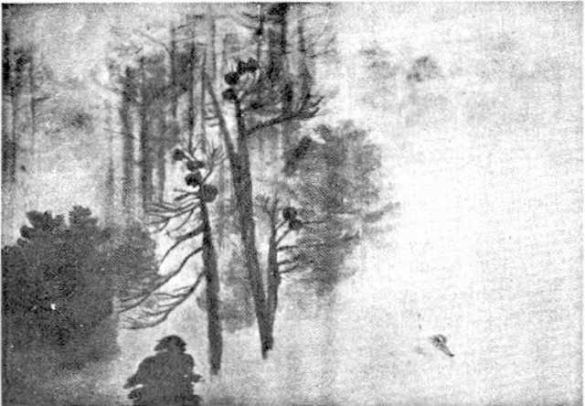
黄昏
［＃改丁］
ロォヌの谿谷をのぼつて行くジュネヴ行きの汽車は、一時國境に止まつて、うるさい檢査を受けねばならなかつた。
長い列をつくつて、荷物を持つたまゝ、人ごみのなかに立つてゐるもどかしさは、戰時及び戰後の歐洲旅行者にとつて、何よりも耐らない苦痛であつた。千フラン以上の金を持つてゐるといふので、汽車から降ろされた英國人の夫婦もあつた。ちよつと國境を越えて、平時ならば何事もなく往き來してゐた兩國人が、一々檢査を受ける煩雜さに耐らないといつて、不平を並らべてゐる者は限りなくあつた。
ジュネヴの停車場では、パンや、バタや、フロマァジュや、砂糖やの細かな食劵を渡して、滯在期日二晝夜を越えたらば、市廳へ屆け出よとの申渡しを受けた。短かい旅行期ならば全く手續きをしに旅行してゐるやうなものである。
停車場から馬車は、ロォヌ河の落ち口を、ルゥソォの小島を、レェマンの湖岸を、オテルデザルプへ導いて行つた。
夏の都市たるジュネヴは、山中の都市といふよりも、ニイスあたりのやうな、水邊の都市を思はしめる明るさがあつた。昨夕、夜行の汽車で巴里を立つた車中の疲勞を暫らく休めてから、私は第一にマダム・ピトエフを訪問しなければならない。
コゥカサス出のこの女優たる夫人の一座は、ジュネヴに劇場を持つてゐて、時々巴里へも出て來ては、モンマルトルの藝術座で、いつも新しい劇作を演じてゐた。例へばルノルモン氏の劇のやうな、新らしい試みはいつもこの一座が演じてゐた。
ジュネヴではこの一座が千九百十七年から、現代世界の名作を上演してゐるので、現代の日本の劇作をも上演したいとの希望を、巴里にゐる或るロシヤの貴族の手から傳へられたので、巴里を立つ前に「役の行者」の譯本を送つて置いたところ、是非都合がよければ逢ひたいから、暑中休暇になつたらば、一度ジュネヴへ旅行かたがた來てくれないかとの事であつた。
郊外近いピトエフ夫人の住居を訪ねるには、タクシイに頼むより法はなかつた。マロニエの青葉の下を、菩提樹の花の薫る下を、二十分も駛らせて行くと、その車は私を、とある靜かな住宅の前へ卸ろした。
階段を登つて、コンシェルジュの教へたまゝに戸を叩くと、一人の老婦人が戸を開けた。來意をつげると、氣の毒さうな顏をして、兎に角はひれといふので、私は夫人が不在だらうと氣がついて、がつかりはしたものゝ、その人の導くまゝにサロンへ通ると、老婦人は、自分がピトエフの母であるが、とまづ自己紹介をしてから、今朝までマダムは、あなたの來るのをまつてゐたが、三時間ほど前に、ロォザァヌの田舍の別莊へ行つたから、無論ロォザァヌへも
られるだらうから、別莊の方へ、是非寄つてくれとの事であつた。留守居に殘されたこの老婦人は、寂しさをまぎらはす相手には、めづらしい東方の外國人の來たのが何よりとでも思つたのか、ピトエフ夫人の舞臺姿の寫眞や、前年の芝居のレペルトアルなどを持ち出して、巴里での評判や、ジュネヴの新聞やを持つて來て、話をたやさなかつた。コゥカサス出の夫人であるといふだけに、多少私の好奇心が動かずにはゐなかつた。
「御兔なさい。あなたのお國は世界での美人國だといふことですが、ほんとうでせうね」と訊いて見ずにはゐられなかつた。この眼の前にゐる老婦人が、その代表者の一人であるといふ意味を、肯定するつもりもなかつたのだが、トルストイの青年期なぞの物語が不圖頭に浮んで來たので、ついそんな問ひを發せずにはゐられなかつた。私の眼前にゐる老婦人は、血色の好い、中脊の、どつちかといへば肥つた、愛嬌のある婦人であつた。
「皆がさうとも言へませんがね」と、微笑しながら、その老婦人は答へた。この場合の微笑は、一種の自信と、誇りとを示してゐるものと解釋しても間違ひはなからう。巴里人から屡々「日本人の微笑」といつて不思議な、時には不可解なものにせられてゐるその微笑の持主である我々が、他人の微笑を解釋して、それが間違つてゐるはずはないからである。
「皆がさうとも言へないが、少くも自分等は、更に自分の娘は、美人であるといふ意味を、此の微笑の中で讀んだところで僣越でもなからう」。私はさう思ふと、私自身もまた一種の微笑を浮かべずにはゐられなかつた。
老婦人は、汽車の時間と、先方の別莊のアドレスとを教へてくれて、若し今から私がすぐその方へ行くならば、電報を打つし、二三日して行くならば手紙を出すといつた。私は路順として、レェマン湖を船で渡つてモントルウへ行き、それから引き返して、ロォザァヌへ行く積りだから、手紙を出すやうにと頼んで、その家を出た。
私をまつてゐた車は、更にジュネヴの郊外へ出て、近郊を一
りして歸ることになつた。一人旅の愉快さは、何處へ行つても自分の思ふまゝになることである。北の方へやゝ遠くモン・ブランの見えるあたりまで來ると、地勢が一段と高く、レエマン湖に沿うた、サボアの佛國の岸邊も、對岸のロォザァヌの市街も、手にとるやうに見える。モンブランの美しい姿は、私は幾度見たことであらう。前二囘の夏は、ドォフィネの山奧から、シヤンベリから、アヌシイから。丁度、信州の中央で見る乘鞍嶽を幾倍か大きくしたやうな嚴かな、そして美しい、氣高い山の姿は、いつも人をして崇敬の念を起さしめる。
淡青の八月空の下に、浮ぶがごとく立ち現はるゝモンブランよ。私は涙ぐましき心をもつて、遠くおん身の前に拜跪せずにはゐられない。おん身に向へば、我が命のおのづからなる姿に立ち返へるのを覺える。なごやかにして宏く、すなやかにして引きしまつた心、高きをのぞめどもあせらず、刻々に變れども常住の相をとゞむるモンブランよ。まことの戀の心とはかゝる姿をいふのであらう。常に若くして、永久に生きる山の語るを聽け、轉瞬の生を享くる我々の心にも、一時、常住不劫の眞諦を呼びさまし、そこに暫しの定着を與へるのである。
五年に亘る大戰も、一千萬に近い人間を死傷せしめた大殺戮も、おん身の純潔の寸毫をも汚すことは出來なかつた。いつも處女のやうなはにかみをもつて、連山の奧に、遠く純白な姿を漂はせてゐるおん身の存在は、愚かなる人間の血に汚された歴史の手の及ぶ範圍を越えてゐる。そして時として思ひがけない方角にその姿を浮ばせて、無語の力で、人間の喧騷をとりしづめてくれる。
輕い綿雲が、空の何處からか生れでて、かすめるやうにこの山の面にかゝつて行く。うす絹のヴオアルのやうな、この不思議な力で引き寄せらるゝ浮生物は、そこを棲み家として、さまよひ歩るく浮浪者の宵々立ち返つて來るやうに、浮動の生活に疲れた時は、この懷に泊りを求めて來る。そして、そこに暫く止まつてゐるかと思ふと、いつともなしに、その雲の存在は、山の面に、鏡面にかゝつた霧のやうに、吸ひこまれるのか、吹き消されるのか、消えてしまふ。
私は立つてゐた草の丘の上からおりて、今度は、下り路を、湖の岸へ、佛國の國境近くまで駛らせて行つたが、明るい輕やかな氣分は、夏旅行者の味はふ獨特なものであつた。
實際、スヰスは明るい國である。「光りの國スヰスに於て、湖水こそは光りそのものである」とミシュレは言つてゐるが、レェマン湖はことに、この明るさの感じを與へる、「世の中の美しいものゝなかで二つのものが比類なくなしとげられてゐる。ジュネヴの湖水には、美しい、氣高い、大きな調和が、そしてルュツエルヌの湖水に於て、壯美がなされてゐる。」
レェマンの水は他の湖水とは異つて青く輝いてゐる。碧い色ではない。むしろ淡青に澄んだ水面が、柔かな笑と、明るい抱擁とを見せてゐる。アルプ連嶺の中をくゞり出て來たロォヌ河は、暫しこゝへ來て休息し、安眠をむさぼつて、復び若々しい勢ひを恢復して、中部フランスへ跳り出して行くのである。
イイル・ドゥ・フランスの空は眞夏でも水色である。ジュネヴへ來て仰ぐ空は、やや我が日本の高原地の空に似て光輝ある深みを見せてゐる。それが對岸の丘の上へ、天の裾が白くうすれてかゝり、ロォザァヌの市街の輝きを、その空色のなかへ包むやうにしてゐる。湖水は眠るでもなく、目醒めてゐるでもなく、湖面全體から、一種のなごやかな樂の音をたてゝ光りと溶けあひ、人の心をその中へ卷きこみ、伸ばし、漂はしめる。悲しみといふには餘りに淡い、疲れといふには餘りに甘い、一種とけた心持がその光りと共に、その樂の音と共に、水面を匐つて行く。
幸ひなことに、この湖面の岸には、赤色帽の獨逸軍隊の進行も見なかつた。水色服の佛國兵の突進もなかつた。前年の夏ごろまでは、最後の手段として、獨軍がスヰスの中立を侵しはしまいかとの懸念が、巴里人を少なからず脅威してゐたが、つひに、その愚擧は演ぜられずに終つた。そしてレエマンはいつも平和の姿をたゝへて、ジュネヴはいつも平和の都市として、戰爭を超越して立つてゐた。戰時、どんなにか我々は、努力してジュルナル・ドゥ・ジュネヴを手に入れて讀まうとしたことであらう。戰線を隔てた兩側に於ける眞の平和論者の聲を聽かうとするのに、どんなにか骨を折つたことであらう。小さくはあれど、この山間の國スヰスは、勇敢な、そして平和を守る搖籃の國である。そして幾度となくこの山間の勇者は、その懷から世界の革命者を送り出だし、またその人々に避難所を提供したことであらう。
カルヴェンに休息の地を與へ、ヴォルテェルに避難所を供し、ルゥソォを送りいだし、スタァル夫人をはぐくみ育てたジュネヴは、今その懷に、この湖水の奧深くに、モントルゥの近くに、眞の平和の偉人ロマン・ロランを安らかに庇護してゐるではないか。私はあした、この湖水をこえて、その人に逢ひに行くのを思ふと、多少胸のをどらないわけには行かなかつた。
ロラン氏への紹介状は巴里のモォリス・ボトシェ氏から貰つてはゐたが、休戰以來果して氏の宿所が以前の處であるかは判明しなかつた。手紙は先きへ出しては置いたが、それが果して氏の手許へ到着するのやら不明なほどな状態にあつた。
巴里から來て見れば、ジュネヴは、牛乳に菓子に煙草に、それ等のものは如何にも豐富であつた。巴里にゐる人々にとつて氣の毒なくらゐの潤澤さであつた。但し佛蘭西へはこれ等の豐富な菓子の一つすら、一定の度を越えて持ちこむことは出來ない。ショコラの箱一つすら嚴しい檢査を受けなければならない。人爲的の國境の煩るさゝは、この戰爭が殘りなく證明してゐる。マッチの小箱すら持ち込むことは出來ない。
翌日は日曜日で、私は手紙を書くのに送つてしまつた。月曜日の朝、市役所へ行くと、旅行劵を一時預りにして、入國した場處と同じ處から出國するための左劵にするとの事であつた。これで、瑞西から伊太利へぬける旅行の計畫はだめになつたわけである。戰時及び戰後の旅行なぞには、殆ど豫定の計畫は立てられない。氣紛れな各國の官憲の手で、旅行者の運命は何とでも更へられてしまふ。私は差當り瑞西を一巡りしたならば、オート・サボアへ往つて一夏送る豫定であつたので、伊太利旅行は翌年にのばすことにして、市役所の役人の求むるまゝに旅行劵を渡して、その受取をもつて、早速船でレェマン湖を、モントルウへ行く事にした。
この湖水には不思議に水面に高低がある。佛蘭西の側、サボアの岸へよつた方は高く、ロォザヌの岸へよつては低く、時に一メートルからの高低がある。暴風雨の時には、從つて湖面が非常な激動を見せて、航行は危險である。平穩の日には、それが湖面に異つた光彩を與へ、一種のうねりと、無語の動搖を見せてゐるのである。
戰爭以來、彿國の岸への航行は禁じられてゐるので、船はいつも左岸を左岸をと、汽笛をならしながら、小さな碇泊地へとまりながら、奧へ、奧へと進んで行く。
ニオンから先きは湖は更に廣くなり、右手にはトノン・レ・バエンを遙に眺めながら、滑るがやうに走つて行く。海洋上の旅を思へば、ミニアチュルに刻んだやうな可愛い航行である。けれど、サボアの岸へは、次第にフランス・アルプが姿を現はして、遠い天空にはまた、モン・ブランが昨日より更にくつきりとした、純白な、目醒めるやうな姿を見せはじめた。凄いほどに白く、輝くモン・ブランは、眞正面に仰ぐには眩いばかりである。それにつゞく連嶺の聳え立つ果しなき山なみ、日頃隱されてゐる天然の藝術は、何の物惜しみもせずに、その幕を、人の目の前へ開展して來る。
ジュネヴから旅客と一緒に乘り込んだ小さな音樂隊が、甲板で奏樂を初めた。一曲終ると小女が二人、錢を集めに
つた。ボエミエンヌらしい、頭髮の黒い、眼のぱつちりした、輕快な歩調の少女は、旅より旅へるバンドの一人かも知れない。彼等は上甲板で終ると、また船首の下甲板で奏しはじめた。
二の池
［＃改丁］
何人も知る人もない國を、たゞ一人旅してゐるといふ氣分が、不圖私の意識の面を掠めて過ぎた。樂の音が、私に旅情を感ぜしめたのであらうか。それとも、彼等の樂の音に、旅情が不知しらず籠められてゐるのであらうか。寂しいといふよりは、もつと輕やかな、一種エクゾティックな旅情である。併しそれもすぐ消えてしまつた。たゞ明るさと、爽さとの中を、心の底までも澄み渡るやうな光の中を、滑るやうに走つて行つた。
「湖水の自然の中に於ける務めは、使命は、何であらうか、と、ミシュレは訊く、それは野水を受けいれて、活水にすることである」。殊にレェマン湖のごときは全くの馴致せられたる水である。寧ろシヴィリゼせられたる水であらう。長い間、氷河の下で、空氣と光りとを缺いてゐた水が、日光と天空との洗禮を受けるために、或る一ヶ處に集つて、その平らかなる表面を靜かに、穩かに、露出して、思ふまゝに光と空氣を吸入する。こゝに野生が失はれて、同時に自在な流達の水の本性が目を醒ます。ロォヌはまさにこの流達の本性を遺憾なく示してゐる。フランスの大河のなかで、ロォヌのやうな雄大で、深遠で、同時に鷹揚な姿を見せてゐるものはほかにはない。レェマン湖はまさにこのロォヌの雄大と深遠とを養ふ休息所である。短慮で、性急で、焦躁であつたロォヌ河が、一度びこの大衆の中へ流れ出た時、靜められ、なごめられ、穩かになり、即ち立派なおとなとなる。最初は濁つた黄色であつたのが、大衆の中で、ロオザァヌの附近へ來ると、不思議な青色を帶び、ジュネヴを過ぎて、佛國の方へ再び長途の旅に向ふころから、彼はまた渇色を帶びて來る。我々が地中海の近く、タラスコン附近で見るこの巨人の雄大と、鷹揚性を取るためには、彼はその途中で、柔かな、やさしい、澄み切つたソオヌを合はせずにはゐられない。私は佛蘭西の河のなかではロォヌの飽まで深い遠大性を愛す。そして彼一人のみが、佛國の河に於て男性である。
「レェマン湖の不思議な青色」と人のいふ、その青色の上に、いま我々は身を見出すのである。「湖水は瑞西の集眼である。その眼の蒼色は空を二重にする」といはれてゐるけれど、ロォザァヌを過ぐるころからのレェマン湖の水の青色は、まつたく何處にも見られない光りある純青色である。岩質のためか、寄生の動植物の故であるか、それとも周圍の山影に對する日光の反射のためであるか、知らないけれども、この澄み切つた純青の水の光くらゐ、柔かな輝かしさを感ぜしめるものはない。それも熱帶地に見るごとき奇怪なきらびやかさではない。鏡の中の世界、フェアリイ・ランドに身を置くやうな一種の感じである。しかも決して不氣味さはない。光明の中に漂ふ青色の國、青光の水の園、日光もこゝでは、その七色が分散せられて、たゞこの一色だけを照り返してゐるやうである。
緑色の可成り廣い連續は陸上に於て、我々が屡々出逢ふことである。碧色の廣袤は山間の湖水には何處でも見出すことが出來る。けれど、純青色の擴がりはあまり人目にふれることはない。若し此處に明るい日光がなかつたならば、確かに一種の衝動を人に與へたに異ひない。
午後の日光を受けて、湖面は一層の靜けさを呈した。寧ろ光りと水との融合した平面の連結である。サボアの岸のアルプ・フランセェは純白より、うす紫に色をかへて來た。そして中腹以下はうすくぼかされて、全く中空に浮ぶ大彫刻の群像のやうになつてしまつた。湖水の奧深くなるにつれて、靜寂が水面を領して、船脚にたつ浪もまつたく音をたてなくなつてしまつた。この沈默の航行が一二時間つづけられた。
その時、左手に當つてやゝ遠く、水中に突き出した半島の一角に、白楊の繁茂した中に、尖塔形の三つの角塞が、影を水中に落してゐるのが見えだして來た。
シヨンの城！
古物語の光景が、この靜寂の中に、不意に開展せられて行くやうである。Prisoner of Chillon ! バイロンを讀んだもので、おそらくこの詩を知らない人はなからう。私の胸の中にもまた、舊い記憶が呼び醒まされた。
“My hair is grey, but not with years,
Nor grew it white
In a single night,
As men’s eave grown from sudden fears;……
Nor grew it white
In a single night,
As men’s eave grown from sudden fears;……
Lake Lemun lies by chillon’s walls:
A thousand feet in depth below
Its massy waters meet and flow;
Thus much the fattom line was sent
From Chillon’s snow white battement,
Which round about the wave inthralls:
A bouble dungeon wall and wave
Have made and like a living grave,
Below the surface of the lake
The dark vault lies wherein we lay,
We heard it ripple night and day……
波と城壁との二重の獄屋、闇黒の中で、たゞ耳にするものは、頭の上で時々碎ける浪の音ばかり、薄明りが指し込んで來ても、それは日光ではない。波のきらめきである。A thousand feet in depth below
Its massy waters meet and flow;
Thus much the fattom line was sent
From Chillon’s snow white battement,
Which round about the wave inthralls:
A bouble dungeon wall and wave
Have made and like a living grave,
Below the surface of the lake
The dark vault lies wherein we lay,
We heard it ripple night and day……
中世紀の生活を、ロマンティックの夢を、さながら藏してゐるのは、レェマン湖の奧である。忍ぶやうに進む船の脚は、濃淡を織り分けた水脈を亂さないやうに、今もなほ繋がれてゐるであらうと思はるゝ水中の獄屋の囚人の胸を掻き亂さないやうにとでもするやうに、少しの音も立てないで進んで行く。
右手の奧に、ダン・デェミデイの連嶺が、最早や、傾きかけた日の光りに藍青に染つた全身を浮ばせ出した。これが湖水の果てをかざる最終の背景である。
船はモントルウへ止まつた。
私は一種の期待と不安とを抱きながら、電車で、H
 tel Byron へと急いだ。此處は、私の旅の目的地の一つである。湖水を下に見ながら、眞白な、人通りの少ない路を走つて行く電車は、或る丘の下へ來て止まつた。車掌は私に、その丘を登つて行けば、其處が、ホテル・ビロンであると教へてくれた。
tel Byron へと急いだ。此處は、私の旅の目的地の一つである。湖水を下に見ながら、眞白な、人通りの少ない路を走つて行く電車は、或る丘の下へ來て止まつた。車掌は私に、その丘を登つて行けば、其處が、ホテル・ビロンであると教へてくれた。私は跳る胸を押へるやうにして、その青葉の茂つてゐる丘を登つて行つた。夕方近い涼氣が青葉を透してすが／＼しく身に迫つて來た。ゐるだらうか、ゐないだらうか。第一に何といふ言葉で私を迎へるであらうか。いつも初對面の人に逢ひに行く思ひが、まづ胸に浮んで來た。
白い小砂を敷いた前庭には、眞赤な夏草が、しんと靜かな空氣の中に、目醒めるやうに咲いてゐた。その中につけてある路は、左手へ
つて、玄關の前へ私をつれて行つた。服裝を整へた何處にでも見るオテルのガルソンが、第一に私を迎へた。私は第一に今夜の宿泊を求めた。彼は丁寧に私をギシェの前へつれて行つた。そして、國藉と、姓名と、旅行地と、年齡と職業とを書かせてから、室への案内に立つた。
その時、私は思ひ切つて、ロォラン氏の事を訊いた。ガルソンはちよつとギシェの所まで立ち歸つて訊いてゐたが、私の所へ引き返して二週間前に出發してしまつたと告げた。私は豫期してゐたことに出逢つたやうな、けれど急に空虚の中へ立たせられたやうな、たよりないつまらなさを感じた。
行く先きをと訊くと、インテルラァケンの宿舍を教へてくれた。そして郵便物はその方へ皆な
してあるとの事であつたから、その方へ訪ねることにしようと、昇降機で階上の室へ案内せられた。湖に面した廣いヴェランダのついた室は、まともにサボアの山々を見渡して、右手には、こんもり木の茂つた中にシヨンの城が眼の下に見えた。そして、今私が降りて來た船は、大きな白鳥のやうにこの靜かな湖面を更に奧深く、ヴェルヌムヴの方へ動くともなく動いて行くのが見えた。冷たい水を持つて、何か用事がないかと、訊きに來た女中に、私はロォラン氏の事を訊いて見た。長いこと、此處に止まつてゐる間ぢう、その人はいつも何か書いてゐたと、その女がいつた。そして時々、湖水の岸を少し散歩したり、訪ねて來る人に逢つたりしてゐたが、大方は引き籠つてゐたと。私は、實はわざ／＼逢ひに來たのだがといふと、二週間前だつたらばよかつたのに、殘念なことであつた、とお世辭を言ひながら出て行つた。
薄闇の來ない中に、せめて、シヨンの城でも見て來ようと、私はまた丘をおりて、蔦のからみついた小さな橋を渡つて城の中へはひつて行つた。
傳説の中からぬけ出して、ふたゝび爽かな夕方の空氣の中を、丘へ登つて、殆ど一人きりしかゐないほど靜かな、そのホテルの室の窓から私は凝つと眺めやつてゐた。
ジュネヴで見る湖水とは異つて、この奧まで來ると、靜寂な別天地である。アルプの一角ダン・ドゥ・リオンが薄紫に染まつて、連嶺の奧に、凉しい夕方の空の中に、アパリションのやうに浮び上る。左岸の、佛蘭西のサボアの岸の山々は湖水の岸まで迫つて、その山影は深碧な水に影を投じ、湖上に波一つたゝず、シヨンの城は、緑樹の中に、これもまた水にその投影を映してゐる。
大きな聲一つたてゝはならないやうな、心のなごやかさを覺える。「
目を醒ました湖水の明るさは、懷しい微笑を、細やかなさゞ波に彫み出して、朝の光りを反射してゐた。山々は肩を聳やかし、眉をあげて、勇ましい姿を、夜の休息の中から振ひ立てるやうに、水邊に迫り、燕の群は山の中腹から湖面へ元氣よく飛びかはしてゐた。
汽車は、湖水の岸を走つて、ロオザァヌへ私をつれて來た。此處で乘りかへて、更に山腹の小さな村に、女優で、先日、ジュネヴで、更に訪問をする約束をして置いたピトエフ夫人を訪ねることにした。小さな幾つかの田舍の停車場はつい私を誤らせて、その村へ到着した時は、もう夕方近く時間がないので、訪問の日を改めなければならなくした。
スヰスの田舍の小村の夏の夕暮は、牧場より立つ草の香がしつとりした空氣のなかに漂ひ、牛の頸につられてゐる鈴の音が、一種の旅情をそゝつて、遠く、近く、ひゞき初めた。小さな支線の汽車が湖水へ向つて走り出すと、線路の兩側の丈け高い夏草がなびき、湖面の上の夕空は、ほんのりと薄光をたゝへて、そこに開展せられてゐる山間の大きな鏡の面を空に反射させてゐる。
ロオザァヌでも、湖水に面した一夜を過ごした。靜かではあるが、何となく賑やかな心持の漂うものは、夜の湖面である。暗いなかに浮ぶものは死の姿ではなく、全くの休息である。水はその休息の眠りの中で、何事かを囁き合ふのか、一種のとりしづめた話聲が水面から立ちのぼる。日中の華かな光の中で眩耀せられてゐた大氣が、光のない夜間は、却つて目を醒まして何事かを語り合ふのかも知れぬ。人間の生活が一時活動を停止してゐる間に、水が思ふまゝに姿を伸ばし、休息を味ひつゝも、ひそやかに樂しい會話を交はしてゐるのかもしれぬ。霧と、闇と、水と、更にその四周に立ちこめてゐる山影との混交した一つの世界は、ひつそりした、併し樂しげな、やすらかな姿を呈して、旅館の窓の一つから一人の人間が眺めやり、うかがつてゐるのも知らぬ氣に、靜かに展開せられてゐた。
翌日、首都のベルンへ向つて走る汽車が、佛蘭西スヰスの領城を脱したかと思ふと、停車場の掲示から、乘り込む人々の言語から、全く一變して、獨逸語になつてしまつた。分水嶺を越えて異つた方向へ走る河のやうに、劃然たる限界がかくも立てられるかと思ふほどに、はつきりと言語の相異が感じられた。全く異つた國へはひつた感じである。この獨逸スヰスの中央にたつてゐるのが、瑞西の首都ベルンである。
此處では勿論人々は獨逸語を
ベルヌは舊い都市である。而して現在も極めて活氣のある都市である。アアル河の屈曲が作りいだす島の如き地形の上から、河流を遙か下方に眺めた、古城趾を思はせるやうな都市である。政廳の背後の斷崕の上から眺めやると、アルプ連嶺が、天際をめぐつて屹立してゐる。澄み切つた夕方の空に、自然が彫み出したこの彫像の群立をながめやるくらゐ、心をしづめ、氣宇を大きくさせるものはない。左端のタンホルンから、右端のドルデンホルンにいたるまで、ベルグリストックが、フィンステルアルが、アイガアが、モンクが、ユングフラウが、ブリュムリフオルブの群巒が、さらにブルュンヂンが、續々として屹立ち、こゝに人間界とは別の天地を形成してゐるのである。
この天空に浮び出てゐる壯美は、人間生活が地球上に初めらるゝ以前からあつたものかどうか知らないが、その美が人間に認められ、その美が人間生活を支配するにいたつたのは、極めて最近のことである。恐らく百年をいづることあまり多くではなからう。地上に美を見出し、空中に美を讀むことは時代の進歩と共に初めてなされたのである。
この大空に描き出だされた自然美が、いつかしらず人々を引きつけて、その頂上へ立たせずには置かなくした。單に自然美の力にひかされた登山者は、十九世紀になつてでなければ生じなかつたものゝやうである。
私の瑞西への旅は、登山は目的でなかつた。人を訪ねることと、出來れば此處を通過して伊太利へ出たいためであつた。然るに、伊太利への通過は、ジュネヴで入國した時、旅劵を押へられてしまつたので、手續きが出來なくなつた。仕方なくこの夏を送るために、佛蘭西のサボアの山中へ歸るには、再びジュネヴから退去しなければならなくなつた。
その間に、また私は伊太利境の或人を訪問して、歸りにインタアラケンへ泊ることにした。トュンネル湖と、ブリアンゼル湖との接合點に在るこの市は夕方からかけて、山中の清涼な氣が漂つて、リンデンの樹の花の香が、その澄んだ空氣の中に高くかをつてゐた。
千九百十九年の夏は、瑞西にとつて食糧の危期であるといふので、一般旅客の入國を、非常な嚴重な規定を設けて、寧ろ拒むやうにしてゐた。夏期の旅客を相手に一年の生計を立てるこの國の市街地は、その旅客を拒まれて、到る處に大旅館の休業が行はれた。といつて若し大戰後の最初のこの夏に、一般の旅客が、戰前にもまして入國しようものならば、忽ち食糧の缺亡を來たすにきまつてゐた。所謂痛しかゆしの有樣で、入國者は滯在期日を豫め定めて、入國と同時に、パンは勿論、バタでも、牛乳でも、フロマージュでも、さらに肉類でもの切手を渡され、その一定量しか一日に攝ることは出來なくした。これは他國人の旅客に對してばかりでなく、瑞西人の巴里の大學なぞにゐる學生の歸省者に對しても同樣の手續きをなさしめた。そして、入國と同時に、その入國した場處の關門で旅劵を押へて、受取證を渡し、豫定期日に、その同じ場處から退去しなければ或種の罰を課することにした。こんな煩雜な手續が、果して、外國人の入國を非常に減少せしめて、到る處の旅館はがら明きであつた。
インタアラアケンの私の泊つた旅館でも、一人のガルソンがやつて來て、到る處のホテルが給仕人や、料理人に仕拂ふことすら出來ないで困つてゐる状態や、それが戰時から引續いてゐるので、瑞西全體が非常に困却してゐることなぞを、ゆるゆる話して行つた。その後で、彼は明朝ユング・フラウへ登山するがよい、電車が頂上までつれて行くから、何も困難なことはないとつけ加へた。それになほ、彼は、窓掛けを開いて連山の奧に、夕映の空の中に、赤味を帶んで紫に染めだされた颯爽たる峻峰を指して、あれがユング・フラウであると教へてくれた。
私は夕食の後、一人で、窓に對し、暮ゆく空に獨り餘光を輝かしてゐるこの美しい峻峰をぢつと眺めやつてゐた。おそらく、連嶺の中で、彼女ひとりのみが、今、落日の餘光を身に浴びて、巍然として群巒の上に臨降してゐるのであらう。他の峯々が、次第に闇につゝまれて來る後までも、彼女はひとり高く、遠く、その闇の上に浮び出てゐるやうに輝いてゐた。
翌朝、登山の電車は、多くのアルピニストを載せて、徐々に山間の谿谷をのぼりはじめた。樅栂などの常緑樹の林には、朝霧が深くかゝつて鳥の聲が幽にひゞき、朝寒むが肌にしみ渡る。雨外套の頸を立てゝ、肩をひきしぼめずにはゐられないほどである。溪流が爭ふやうに逆落しにおちて來て、岩を噛んでをどりあがる。屈折して登つて行く軌道は、林間を、絶壁の上を、草山の中腹を、次第々々に眼界の開くる方へと導いて行く。
山上の幾つかの小さな停車場では、人々を集呑して、頂きに近づくにつれて、人員の制限で後車をまたねばならぬ人々も生じて來た。入國者の少ないこの夏でも、登山客は相當の數にのぼつてゐるものと思はれる。
放牧の牛の鈴の音が、朝霧の間にちりん／＼響き渡る。澄みきつた空氣の中に、遠く、近く、きこゆるこの響き、牛は自分等の頸に掛けられてゐるその鈴の鳴るのなぞは無頓着に草をはんでゐる。そして、時々、立ちとまつては、山腹をうね／＼登つて來る電車を、不思議さうな眼をして眺めやつてゐる。
時々、牧者の角笛が遠くにきこえる。朝霧の中に迷つた羊でもよぶのであらうか。傳説のなかに聞いてゐるやうなその牧笛のひゞき、ロオランが最後に吹き鳴らしたやうな古來からの響、幾人もの詩人に瞑想を與へた不思議なひゞき、それが霧のなかに斷續して傳はつて來る。
氷河が、大雪谿が、徐々に我々の軌道の行く手に輝き出した。時の力も、日光の威力もどうすることも出來ない千古の氷雪は、我々の前へ全く人界とは異つた世界を開展する。山谿を彫み、峻峰を削り、きはめて徐々に、全くの沈默と思はるゝこれ等の氷雪が、不斷の動きを、目に見えぬ下降をつゞけてゐる。此處にもまた動きの世界がある。時の推移を岩壁に鏤刻して、人の耳には少しも入らない響きを立てて、日夜働いてゐる白衣の大偉人がゐる。この暗默と勞働、自然そのものゝ働き、これをより多く具體化してゐる人間があるならば、それは人間界の偉人であるに違ひない。
軌道は、此邊から屡々隧道にかくれ、或は岩面に窓を穿つて、大雪谿に臨み、或は不意に白光に輝く雪の中腹に面接する。
頂上に近き終點に電車のとゞまつたのは、正午であつた。此處には粗末ではあるが、旅宿とレストランを兼ねた木製の家が、岩窟の中に出來てゐて、登山旅客は皆な晝食をしたゝめた。大雪谿の目を射る光を防ぐために黒く染めた眼鏡を買つて、背後の雪の山から次第に登つて行つた。
純白な峻峰が、鋭い角度を空中に描いて、近づくも恐ろしいばかりに屹立つてゐる。日の光に輝いて、全體が燦爛たる一つの光體となる。天空の紫色が濃い輝きを上から注ぎかけ、光ある沈默が頂上を領してゐる。
此處には動かし難い峻嚴な現實が姿を見せてゐるのである。自然の必然性が力強い表現をなしてゐるのである。この主體を描き出す一點一劃も偶然ではない。また人力で勝手に動かすことは出來ない。この表現そのものが現實であり、理想であり、力であり、沈默であり、活動である。人は山麓に於ては、思ふまゝに置きかへらるゝ文明を見る。併し頂上に立てば、必然の姿、動かし難い威嚴と、力とを感ぜずにはゐられない。この有るがまゝの姿こそは藝術である。
山頂は、人をしてたゞ平面の文明以外の感じを抱かせるばかりではなく、此處に力と美との合致、過去と現在と未來との融合、現實とその必然の表現、即ち藝術との一致を感ぜしめる。登山者はこの自然の大藝術に接して、いかに動かす可からざる現實の威嚴に打たるることであらう。山岳の遠望は既にこの必然性の威力を人の心に植ゑつける。山頂に立てばその必然力が即々として身に迫つて來る。亂れたる心に統一を、散り動く氣分に集注を與へ、己れの姿を最も自然のまゝに、しかも最も調つた形に於て現じたい要求にかられしめる。これが至高の藝術品が與へる效果と何の相異があるであらう。現實の亂れざる表現が即ち美である。
眞白な雲が下方の山々にたゝなはり、遠方を限る峯また峯の上に、紫紺の空が垂れさがつて地球の表面はたゞ雲と山とより出來てゐるものゝ如き感じがする。
下山の時刻が近づいたので、また電車内に身を置いた。氷河と雪谿とを出拔けて、草山にかゝると、岩蔭の雪の消え殘る間を綴り合はせて、一面の花園である。短かい時期を爭つて、日光を吸ひ、花を開き、果を結ばねばならぬ草花の使命は、はかない中にも勇ましい勢を示してゐる。頂上の威嚴を緩和する如く、こゝには小さな無數の植物がその最も美しい姿に身を包んで、年々の使命をくりかへしてゐる。頂上が不斷の相を見するならば、中腹は繰り返しの生活相を示してゐるのである。而して、この花園の中を放牧の獸が、麓からつれて來られて夏期の自由さを味つてゐるのである。
或る途中の小さな停車場では、この山中で彫む小さな木製の熊を賣りに來てゐた。熊一つは大小をとはず一フランであり、兒を負ふたのや、連れ立つたのは二フランであり、二匹の仔熊を背に載せてゐるのは三フランであつた。その數頭を記念にとて買ひ求めた。ベルンなる都市は熊の都であつた。それをいつの間にか人間が占領してしまつたので、今は山中の木製の小熊として、その記念をとゞめてゐるだけである。
下山の電車は登る時よりも走ることが早く、暮るゝにはまだ間のある頃、湖水の岸まで連れて來られてゐた。水にうつる樹々の影が深く湖底まで沈んでゐるやうな靜寂のなかで、湖水の岸を私は一人たどりながら、振り返つて、連嶺の奧に昨日と同じく誇らかな、またはにかむやうな、落光を浴びて立つユングフラウの美しい姿を仰ぎ見た。數時間前に、私はおん身の頂きに近く身をおいたのであつた。そしてその純眞な無限の威力を身に感じたのであつた。今はまた、遠くからおん身を仰ぎ見て、言ひ難い懷しさに、拜跪せずにはゐられないほどの氣分の中にひたつてゐるのである。